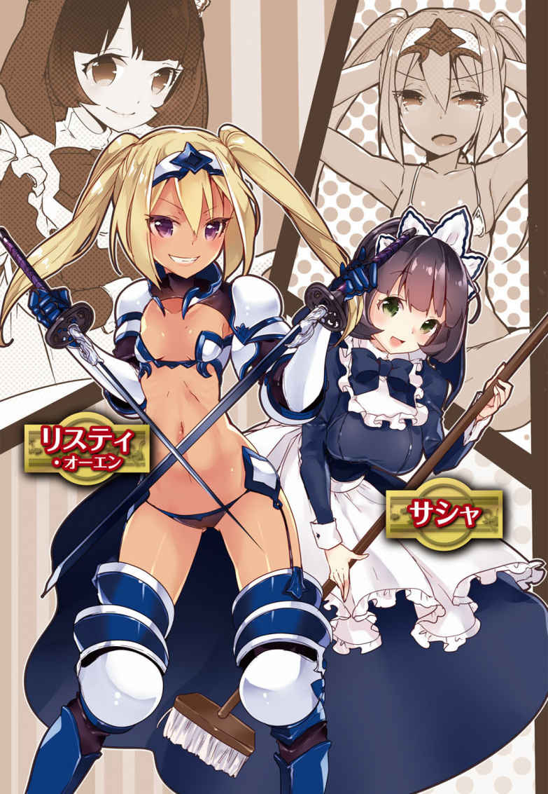

| ノクスノベルスBook01 | |
| 黒水蛇 & 天那光汰 & 裏地ろくろ | |
| フロンテイィアワークス (2017) | |

どこかで、水滴がしたたり落ちている。
横になっていた体は冷えきり、下のアスファルトと同じぐらいの体温しかなかった。
地面に手をつき、ギシギシと関節を軋 ませながら、ゆっくりと身を起こす。
視界には、フラフラと歩きまわる何人もの人影が見えた。
自分は、歩道のまんなかで寝ていたらしい。
なぜこんなところにいるのか......
思い出せない。
ゆっくりとした動きで立ち上がる。オイルの切れた機械のようなぎこちなさだった。
視界が妙におぼろげだ。
耐えがたい空腹感があった。
もう何日も食べていないような気分だ。
食べ物を探しに、一歩、足を踏みだそうとして、その水滴の音に気づいた。
視線を下ろすと、足元に血溜まりができていた。
慌てて飛びのこうとする。
体は動かなかった。
こちらの意思に反して、ゆっくりと両手だけが持ち上がる。
視界に入ったそれは、血で真っ赤に汚れていた。
◇ ◇ ◇ ◇
「っ!? 」
雄 介 はシーツを跳ね飛ばし、ベッドから身を起こした。
「っつ......」
とたんに鋭い頭痛が走り、思わず頭を押さえる。
痛みはすぐに治まった。
カーテンを閉めきっているため、部屋の中は暗い。
夢の中の水滴音が、まだ続いていることに気づいた。
「......？」
視線を向けると、そちらはキッチンだった。シンクの水道の蛇口から、水がしたたり落ちている。
雄介はしばらく無言でそれを見つめてから、大きくため息をついた。
「......はぁ。なんだよクソ」
おかしな夢を見た。
立ち上がって、キッチンに向かう。冷蔵庫の麦茶をコップに注ぎ、喉を鳴らして飲んだ。水分が乾いた体に染みわたる。
寝起きでぼんやりしていた頭が、ようやく目覚めてくる。
麦茶を戻そうとしたとき、
「いてっ......」
腕に、引きつったような痛みを覚えた。
見れば、服の袖 が破けている。
犬に噛 みちぎられたような跡があった。
それを見て、雄介は急速に、記憶を取り戻した。
第一話 パンデミック十日目
武 村 雄介。
二十五歳。元サラリーマン。
会社が倒産してからは転職活動もうまくいかず、すこし前からマンションに引きこもって、ひたすらゲームをしていた。敵を銃で撃ち殺していくアクションゲームだ。無心になって一週間、ぶっ続けでやっていた。
それがひと区切りついたあと、適当にヒゲをそり、食料でも買いに行くかと外に出た。
その廊下の途中で、見知らぬ男に襲いかかられた。
スーツを着た中年の男だった。よだれを垂らし、顔を歪 めて、飛びかかってきた。
慌てて蹴り飛ばし、そばにあった鉢植えを投げつけて自室に逃げたが、男は追いかけてきて、扉をガンガン叩きはじめた。
雄介は震えながら警察に電話をかけるが、まったくつながらない。
そのうち気分が悪くなり、立っていられなくなった。
最後の力をふりしぼってドアにチェーンをかけ、倒れこむようにベッドに入ったところで、雄介の意識はとぎれた。
日付を見ると、そのまま三日ほど寝込んでいたらしい。
襲いかかってきた男のことを思い出し、慌ててドアを確認するが、破られた痕跡もない。
「なんだったんだよ、あいつ......」
ひとまず安心したが、外に出るのはためらわれた。
デスクに向かってＰＣを起動し、ネットで事件を検索する。あの男が異常者として捕まっていないか調べようとしたのだ。
そこで、世界がそれどころではないことを知った。
「マジかよ......」
全世界で同時に発生した、謎の疫病。
致死率は百パーセント。高熱で脳がやられ、感染した人間は一日ともたずに死亡。その後は死体が動き出し、無差別に人を襲うようになる。
彼らに噛 まれた人間は感染し、死亡、そして彼らの仲間となる。
「ゾンビじゃねーか......」
雄介は呆然とつぶやく。
さまざまなニュースサイトを検索していくが、半数はつながらなかった。残りも、四日ほど前から更新が途絶えている。
リアルタイムに更新しているサイトもわずかにあったが、そこにある情報はどれも絶望的なものだ。
政府は機能しておらず、各地の議員と自衛隊が中心となって救出活動を続けているが、うまくいっていない。道路は乗り捨てられた車でふさがれ、避難民は各地に取り残されている。
全世界が大災害に襲われたようなものだ。
「............」
静かな暗い部屋で、モニターの前に座りながらそれらをながめていても、まったく現実感が持てない。
「......あ、テレビ」
電源を入れて、チャンネルを民放に変えるが、どこも砂嵐だった。
雄介は立ち上がり、ベランダの窓に近づいた。遮光カーテンをすこしだけ開き、まぶしい光に目をしかめながら、外をのぞく。
マンションの五階から見える光景は、いつもどおりだ。ビルや建物が遠くに見えるだけで、特に変わった様子はない。
窓を開け、ベランダに出る。
あたりを見まわすと、地上の様子が目についた。いくつもの車が乱雑に乗り捨てられていた。歩道に乗り上げたり、店に突っこんでいるものもある。
そばには人影があった。だが、ふらふら目的もなく、ただ徘 徊 しているように見える。それが本当に正常な人間なのか、雄介には判断がつかなかった。
「えらいことになったな」
部屋に戻り、椅子に腰を下ろしてつぶやく。
すくなくとも、何かが起きているのは事実のようだ。
感染が始まったのは、ちょうど雄介がゲームに熱中していたころだ。それから二、三日で、日本全土を席巻している。
（ってことは、あいつもゾンビ？ だったのか......？）
襲ってきた男のことを考え、そこで雄介は凍りついた。
慌てて右腕の袖をまくり、男に襲われた部分を確かめる。
そこには、服を貫いて皮膚にまで食いこんだ、男の歯形があった。
出血はすでに止まってかさぶたになっていたが、雄介は焦りながらネットで治療法を調べた。
しかし、噛まれたら終わり、という情報しか出てこない。
「潜伏期間か......？ でも、一日で死ぬって書いてるしな。高熱......あれだよな、どう考えても」
男に噛まれたあとの悪寒が、感染の症状だろう。
しかし、雄介は生きている。
「あいつはたんにイカレてただけで......変な菌が傷口から入ったとかか？ ......わかんねーや」
念のため、ネットで近くの病院の電話番号を調べてみたが、どこもつながらなかった。警察も救急も同じだ。
いまだに現実感が持てないが、社会が停止しているのは事実のようだ。
雄介はとりあえず、マンションの同じ階のインターホンを押してまわった。他の住人がいたら、情報をもらおうと思ったのだ。ネットだけでは心もとない。
しかし、どこも反応がなかった。鍵も閉められている。ほとんどの人は避難してしまったらしい。
そんな中で一室だけ、鍵が開いていた。
「すいませーん」
呼びかけにも反応はない。
中は真っ暗で、玄関には女物の靴が二足、そろえて置いてあった。
それを見て、住人の姿を思い出す。
たしか、黒 瀬 というＯＬだった。
黒髪をゆるく三つ編みにして、眼鏡をかけた、陰気な雰囲気の女だった。ほとんど話したことはない。すれ違ったら挨拶する程度だ。
すこし迷ったあと、扉を閉め、靴を脱いで玄関に上がった。
「......お邪魔しまーす」
そばのスイッチで電気をつけるが、やはり部屋には誰もいない。
不法侵入に気がとがめるが、雄介は中に入った。
間取りは雄介の部屋と同じ、一ＤＫだ。テーブルの上はかたづいていて、キッチンには調味料や器具が丁寧にならべられている。
今いる台所の他に、もうひとつ部屋がある。引き戸は開いていて、奥にベッドが見えた。
「ほんとにいねーのかな......」
念のため、奥の部屋も確認する。
ピンクのカーテンが引かれた室内はうす暗かった。サイドテーブルにノートパソコンがあるぐらいで、他はクローゼットと化粧台のみの、シンプルな部屋だ。
枕元にある猫のぬいぐるみが、女の子の雰囲気を感じさせる。人の寝室に踏みこんでいることに、雄介はすこし後ろめたさを覚えた。
そのとき、後ろでかすかな物音がした。
慌ててふりむくと、引き戸のそばに、黒髪の女が立っていた。
眼鏡をしていないので、一瞬わからなかった。
この部屋のＯＬ、黒瀬だ。黒のセーターとジーンズの私服姿だ。
「あ......すみません。返事がなかったんで......」
そこまで言ったところで、相手の様子がおかしいことに気づいた。
ぼんやりとこちらを見ているが、その視点は定まらず、体はかすかに揺れている。
「あの......？」
黒瀬はゆっくりときびすを返し、玄関へと向かった。
雄介はしばらく硬直していたが、すぐに黒瀬のあとを追いかけた。
その先で見たのは、黒瀬が玄関の扉を前に、うつむいている光景だった。
「黒瀬さん......？」
カリ、カリ、という音が部屋に響く。
黒瀬はなでるように、指先でドアノブの近くを引っかいていた。
「何してるんすか？」
近くでのぞきこんでも、黒瀬は反応しない。
もしかして、と思いながら、黒瀬を観察する。
すこし髪がほつれているが、美人だった。度の強い眼鏡は人相を変えるというが、眼鏡を取っただけで、がらりと印象が変わった。すこし暗いが、文学少女が成長したような雰囲気だ。
その顔は健康的な肌色ではないが、瞳は血走っているということもなく、ぼんやりとドアノブを見つめている。
ドアを引っかく爪は傷だらけで、ドアの方もその部分だけ、塗装が剥がれていた。自分が来る前から、何度も引っかいていたのかもしれない。
その指先は、たしかに血色が少ないようにも見える。
「黒瀬さん？」
言いながら、おそるおそる、肩をつかむ。
セーターごしの感触は、柔らかかった。
体温については、服の上からなのでいまいちわからない。
いまだになんの反応も見せない黒瀬のひたいに、熱を測るように手を当ててみる。
（......嘘だろ）
冷たかった。
冷え性の人間とは違う、マネキンのような冷たさだ。
それでも信じられず、おそるおそる、黒瀬の首筋に指をはわせる。
われ関せずと、扉を引っかき続ける黒瀬の、その頸 動 脈 をかるく押さえ、じっと待った。
しかし、いつまでたっても脈は感じられなかった。
「マジかよ......」
口元に手をかざして確認してみるが、呼吸もしていない。すこし後ろめたく思いながら胸に手を当てるが、心臓の鼓動もない。
「............」
ゾンビ映画のようにグロテスクな姿なら、まだ納得できたかもしれない。
しかし、黒瀬は、やや血色の悪い、普通の人間のようにしか見えなかった。
それが、呼吸も脈もないまま動いているという事実を、雄介はしばらく受け止められないでいた。
部屋に戻り、再びネットで情報収集をする。
「表面的には、生きている人間と同じか......」
ゾンビウイルスに感染しても、姿かたちが変わるわけではないらしい。
普通の人間と変わらない、綺麗なゾンビというのも珍しくはないようだ。それが被害を拡大させる一因になったとも言われているが。
「でも、あの雰囲気は、死体って感じでもないよな」
葬式ぐらいでしか死体を見たことはないが、あれは死体というより、別の生き物に変わったというほうがしっくりくる。
「それにしても......」
疑問なのは。
「あれがゾンビなら、なんで俺が襲われないんだ？」
ニュースサイト、ＳＮＳ、匿名掲示板、ネットのどこを見ても、ゾンビは人を襲う、としか書かれていない。そこに区別はなく、老若男女、誰彼構わず、近くの人間に襲いかかるという。
不思議なことに他の動物は襲わないようだが、人間が襲われなかった事例はひとつもない。
「まあ、ネットの情報だしな」
黒瀬に襲われなかったのは事実だ。人を襲わないゾンビもいるのかもしれない。
「つか、腹へった......」
ずっと引きこもっていたため、食料は尽きている。近場で言えばコンビニだが、まだそこまで遠出する勇気もない。
黒瀬の部屋から何か取ってこようと、雄介は外へ向かった。扉を閉めて、ふりむいたところで、
「うわっ!? 」
すぐ背後に、中年の男が立っていた。
服はぼろぼろに破けて血まみれで、首には大きな傷がある。雄介は腰を抜かしてへたりこんだ。
だが、男は何をするでもなく、じっとこちらを見下ろしていた。
そのまま、動けない雄介をしばらくながめたあと、男はふらふらと離れていった。
雄介はその背中を視線で追いながら、バクバク鼓動する心臓を落ちつかせた。
「あいつもゾンビか......？」
立ち上がり、急いで追いかける。
男の動きは遅く、すぐに追いついた。
「すいません、ちょっと！」
雄介の言葉にも、反応はない。
首の傷は大きく、噛みちぎられた跡のようだ。他にもよく見れば、大小さまざまな傷を負っている。普通に考えて重傷だ。
それでも雄介は確認のために、後ろから手を伸ばし、首筋に当ててみた。
冷たかった。
「............」
雄介は無言で離れる。
自分の部屋の前まで戻ったあと、大きくため息をついた。
「マジなんだなあ......」
今まで半信半疑だったが、この世界にゾンビがあふれているというのは事実のようだ。
気持ちを切り換え、黒瀬の部屋に入る。靴を脱ぎ、冷蔵庫の中を物色した。
賞味期限まぎわのヨーグルトと、ミネラルウォーター、卵を取り出し、鍋でゆで卵を作った。二枚だけ残っていた食パンをトースターで焼き、マーガリンを塗ってほおばる。
人の台所で好き勝手をしているが、黒瀬が死人であることはもう明らかだ。ここで食料を腐らせるのももったいない。
当の黒瀬は、浴室に閉じこめておいた。最初に不意をつかれたときは、そこから出てきたらしい。扉をきっちり閉めると、中でまごつくだけになった。
「そういや、まだ電気ガスは使えてるな。ネットもつながってたし」
インフラはまだ保っているようだ。日本全土が破壊されたわけではないらしい。
腹が膨れると、気持ちも落ちついた。心も前向きになる。
このあたりの住人がどこに行ったのかわからず、雄介は逃げおくれた格好だが、幸い、命の危険もなさそうだ。
なぜゾンビが人を襲わなくなったのか、それはわからないが......
「とりあえず、探検だな」
まずやることは、近所の探索だ。
念のため服を重ね着し、バイク用の革ジャケットを羽織る。これで万が一噛まれても、皮膚は守れるだろう。
グローブをつけ、フルフェイスのヘルメットを小わきに抱える。ベルトには、鞘 に入れた包丁を挿しておく。武装というには心もとないが、慰め程度にはなる。
バイクのキーを取り、マンションの階段を下りている途中だった。
三階の踊り場で、通路の方から物音が聞こえた。首を伸ばしてのぞいてみると、通路の一室の前に、男が三人、群がっていた。
先ほどの黒瀬のように、扉を引っかいている。
「何やってんだ......？」
三人の服装は乱れ、ところどころ怪我をしていたが、それ以上に雰囲気がおかしかった。
それでも、雄介は近づき、すこし遠くから声をかけた。
「大丈夫ですかー？」
その言葉にも反応はない。
やっぱりゾンビかと思いながら、どうしてこの扉に執着しているのか不思議に思う。
突然、ゾンビたちの動きが速くなった。男の一人が扉に体当たりを始める。
その音にかき消されそうな、かすかな声で、扉の奥から女の声が聞こえた。
「だ、誰かいるんですか？ いますか......？」
「あ、はーい。います。大丈夫っすか？ こいつらなんです？」
「た、助けてください！ 外に張りついてて、ずっと出られなくて！」
「え......あー、はい。ちょっと待って」
女の声に、雄介は警戒度を上げる。ヘルメットをかぶり、包丁を抜いた。
雄介の声には反応しなかったが、こいつらは人を襲うタイプのゾンビなのかもしれない。警戒するにこしたことはない。
「なんかねーかな......あれか」
雄介は、踊り場にあった消火器に目をつけた。
格納容器を開けて、手に取る。ずしりと重かった。
そのまま噴射しようとして、手を止める。ゾンビ相手に消化剤が効くだろうか。人間だったら、牽 制 ぐらいにはなるだろうが......
（普通にぶつけるか）
消火器のその重さを利用し、遠くから投げつけてみることにした。攻撃してみて、こちらに反撃してくるか調べるためだ。
反応があったらすぐ逃げられるように、階段の近くからほうり投げた。重さで腕がつりそうになったが、消火器は見事に命中した。ゾンビたちははじき飛ばされ、折り重なって倒れこむ。
雄介がじっと注視する中、ゾンビたちはのろのろと立ち上がり、再び扉を叩き始めた。
それを見て、こちらに攻撃はしてこない、と雄介は判断した。
「大丈夫だよな？」
恐る恐る、ゾンビたちに近づく。
すぐそばまで近づいても、ゾンビは扉を叩くだけだ。
人を襲うでもない。
（......部屋に入りたいだけなのか？）
雄介の脳裏は疑問だらけになった。
「もうちょっと待っててください。どけますんでー！」
部屋に大声で呼びかける。
包丁をしまい、後ろからゾンビの一人の腰を抱える。
よそに動かそうとするが、勝手に動く人間の体を運ぶのは骨が折れた。諦めて、手すりから地上に落とすことにする。
ゾンビは頭部を潰せば動きを止める、という情報はあった。しかし、まだそこまでの覚悟はない。魚をさばいたこともないのだ。死体とはいえ、人間に刃物を使うことには抵抗があった。
幸い、手すりから落とすのは簡単だった。腰から手すりに押し上げるだけだ。ゾンビたちは扉に執着するだけで、こちらにはいっさい関心を向けない。
「......よいせっと」
ドン、と地面に叩きつけられる音が響く。下をのぞくと、広がる血溜まりの中で、折れた手足をもぞもぞ動かしているゾンビが見えた。
すこしうすら寒い気分になるが、頭を振って次のゾンビを落とす。
三人とも始末したところで、部屋の中に声をかけた。
「もう大丈夫ですよー！ あいつらいなくなりましたからー！」
しばらく反応はなかった。
すこしして、ゆっくりと扉が開く。
チェーンのむこうから、三十代ぐらいの女の不安そうな顔がのぞいた。雄介を見て、
「ひっ!? 」
怯 える女の様子に、雄介は不思議に思うが、自分の姿を思い出してヘルメットを取った。たしかにヘルメット姿が扉からのぞいたら怖いかもしれない。
「大丈夫ですよ。かたづけときましたんで」
素顔を見せてのその言葉に、ようやく安心したようだった。女は玄関にへたりこむ。
しばらくして正気に戻ったのか、女は立ち上がり、チェーンを外しながら言った。
「す、すみません、ありがとうございます。ずっと逃げられなくて、もうどうしようかと......」
「大変だったっすね」
雄介は気楽に言う。
扉の前に群がるゾンビは、さぞかし恐怖だったろう。出られなくても無理はない。
ゾンビがこの部屋に執着していたのは不思議だが、たんに運が悪かったんだろう、ぐらいで考えるのをやめた。
扉を開け放ったところで、女は不安げに通路を見渡した。
「あの......このあたりは安全になったんでしょうか？」
「大丈夫じゃないですかね？ 一時期はひどかったみたいだけど」
ネットの情報を思い浮かべながら、雄介は答える。肝心のゾンビが襲ってこないので、あまり危機感を持てない。
雄介の言葉に安心したのか、女は何度も頭を下げ、
「本当に、本当にありがとうございます。みっちゃん！ おいで、パパのとこ行くよ」
その声に、後ろから小さな足音が寄ってきた。小学生ぐらいの女の子がリュックを背負って、こちらを見上げてくる。
女も、奥からバッグや荷物を抱えて戻ってきた。玄関で靴をはきながら、
「夫を待っているうちに、逃げ遅れてしまって......。あの、よければ、避難所まで一緒に行きませんか？」
「避難所？ どこにあるんですか？」
「近くの小学校なんですけど......うちの子も通ってるところで」
「あー......？ ちょっとわかんないですね。案内してもらってもいいですか？」
「はい。もちろんです。よろしくお願いします」
同行人ができて安心したのか、女は表情をゆるめた。
マンションの階段を下りている途中、
「アレ、まだいるんですか......？」
徘徊しているゾンビのことを聞いて、女は青ざめた。
雄介は気軽に、
「でもなんか、襲ってこないですよ？ うろついてはいるけど」
その言葉にも、女は半信半疑の表情だ。
雄介は続けて、
「近づいても平気でしたし。さっきの扉のやつらはちょっとわかんないですけど......。そっちは、ゾンビが襲ってるとこ見たことあります？」
「いえ......」
女は首を振る。
テレビのニュースで、感染者には絶対に近づかないようにと念を押されたぐらいで、実際の映像は見ていないらしい。ずっとあの部屋に閉じ込められていたそうだ。
「まあ、行けばわかるでしょ」
話すうちに、一階についた。エントランスを抜け、表に向かう。
母子は手をつなぎ、不安そうに身を寄せあっている。
（こいつらと一緒だと、バイク使えねーなあ）
そんなことをのんきに考えながら、雄介は道路に出た。
そこで三人は固まった。
五、六人のゾンビが一斉に、こちらをふりむいた。
「ひっ......」
女が悲鳴をもらす。
雄介は、全身に鳥肌が立つのを感じた。
（喰われる）
「逃げっ......！」
母子を押すようにして、慌てて戻る。後ろから、猛烈な足音が近づいてきた。
「早くっ！」
転げるように、階段のところまで戻った。雄介は後ろをたびたびふりかえりながら、母子を上に追いたてた。
後ろから近づく姿に、雄介は悲鳴をあげる。
「ゾンビって遅いんじゃねーのかよ！」
走る速度は、ほとんど人間と変わらない。手を振らないで、下半身だけの不格好な走り方をするため、一歩ごとに体がかしいでいる。それが余計に恐怖を増幅させる。
「上に！ 部屋に戻れっ！」
一段飛ばし、二段飛ばしで駆け上がる。
三階の踊り場で、横から何かがぶつかってきた。雄介は通路に吹っ飛ばされ、壁にぶつかって倒れこんだ。
何が起こったかわからないまま、雄介は身を起こす。かるく打った肩を手で押さえながら顔を上げると、
「あぐぁっ......」
奥から奇妙な声が響いた。
その光景に、雄介は、ゴミ捨ての日、早く出しすぎた生ゴミに群がるカラスの群れを連想した。
あるいは、倒れた人を介抱しようと集まる、人の群れか。
だが、
「だずっ......げ」
グチャ、ビチャ、という粘着質な音と、群がるゾンビたちのあいだで飛び跳ねる赤いものが、そのどちらでもないことを知らせていた。
「ぉっ......」
にぶいその声が、母子の最後の声となった。
ゾンビたちは十人近くいたが、雄介には目もくれず、母子に群がっていた。
どれだけの時間がたったのか。
気づくと、周囲をゾンビが埋めつくしていた。通路の奥までゾンビが連なり、座りこむ雄介のまわりにもゾンビがひしめいている。彼らは雄介を一 顧 だにせず、母子を囲む輪の順番待ちをするように、ふらふらとうごめくだけだった。
やがて、日が傾いてきたころ。
ゾンビたちは一人、また一人と、去っていった。
呆然としていた雄介が我に返ると、あたりは無人になっていた。
母子のいたそこには、赤黒く濡れたコンクリートと、引きちぎられた衣服、そして茶色いかけらが散らばっているだけだった。
「えっ......」
わけもわからず、雄介はぼんやりと、その光景を見つめていた。
※続きは製品版でお楽しみください♪
序章 召喚された男
終わりと始まりはいつだって唐突だ。
つまらないことで終わったはずの人生は意外な形で再開した。
──冷たい床の感覚に意識が浮上する。
酷く悪い夢から目覚めたような気持ちの悪さを覚えつつ目を開けた。
そこは、見慣れた安アパートとはまるで異なる光景が広がっていた。
一〇メートルはありそうな石造りの高い天井と周囲を明るく照らすシャンデリアが視界に映る。
大きな窓は存在せず、小さな明かり取りの窓から赤い光が差し込んでいる。
目に映るこの場所を俺の知識と照らし合わせて表現するならば......、石造りの西洋の城の中。
床には複雑な文様が赤黒い色で描かれていた。
「よく来たな。我がマステリア領へようこそ、異世界の住人よ」
言葉使いとは裏腹な可憐に響く声が耳に届く。
声の主を見つけた俺は、ぎょっとした。
赤い光が照らし出す、周囲より一メートルほど高く作られた床に備え付けられた、玉座を思わせる大きな木製の椅子。
そこに、まだ未熟さを見せる小柄な少女が偉そうにふんぞり返っているのはまだいい。
日本で言えばゴスロリ、と呼ばれるようなリボンやフリルで彩られたドレスを着ているのも大した問題じゃない。
少女の背中に羽が生えていることは大問題だった。
赤い鱗 に覆われたコウモリのような羽はドラゴンを連想させる。
「お前......、フィーネ様が自ら声をかけているのだ、なんとか言ったらどうだ」
声をかけられたことで、まだ他にも人が居たことに気がついた。
玉座の右前に立つ浅黒い肌で、黒い鳥類の翼を持つ一八〇センチ近くはありそうな長身の女と、王座の左後ろに立つ青い鱗に覆われたコウモリのような羽を持つ、メイド服の少女が居た。
どうやら此 処 にはコスプレをしていない普通の人間は居ないらしい。
異世界、というからには本物なのかもしれないが、触ってみないことにはなんとも言えない。
異世界っぽい雰囲気を出すためにコスプレしている可能性もあるわけだ。
なにか言え、と言われてもこの場面でなにを言うべきだろうか。
銀色の西洋の鎧 を身に着けている長身の女の腰には剣がある。
下手なことを言ったら逆に問答無用で斬りかかられそうで声がでない。
「フフ......。驚いて声も出ないのか......。それとも言葉を理解できぬ獣を呼び出してしまったか？ 肉体の再構成の際に傷を癒 し、こちらの言語を理解できるようにしたはずだがな......」
そうだ、思い出した。
確か俺は......借金背負って派遣会社に勤めているような奴は息子じゃない、と両親に絶縁を宣告されたショックで飲みに行った帰りに、トラックに跳ねられたはずだ。
慌てて身体を確認するが、少女が告げた通り傷一つ残ってはいない。
ただ、着ていたジャージは擦 り切れ、赤黒い血で染まっている。
それが、間違いなく現実に起きたことだと告げていた。
不意に悪寒が走る。
玉座に座る紅の髪をポニーテールに纏 めた少女が、真紅の瞳で俺を見つめていた。
「まぁ、仮に獣を呼び出してしまったのであれば......処分するしか無いな」
にぃ、と口の端を吊り上げ......少女とは思えない獰 猛 な笑みが浮かぶ。
......そうくるか。
その笑みには恐怖を感じるが、『欠陥品であれば処分する』という物言いにカチン、と来た。
相手に応じるように笑みを浮かべ......まっすぐに目を見つめる。
深く息を吐いてゆっくりと吸い込み...腹に力を込める。
何かと威圧的な相手と話す機会が多かった俺が身につけたある種の自己暗示。
感情が冷え...少し冷静になったところで声をだす。
「ちゃんと言葉は理解できている。処分するのは勘弁してくれ」
会話を行うときに発する言葉はゆっくりと。
そのほうが落ち着いて状況を分析しながら話すことができる。
「なんだ。ちゃんと言葉を話せるではないか」
「ああ、お招き頂き感謝するって言うべきだったか？ それとも助けてくれてありがとう、か？」
「くっくっく。この状況で私相手にそんな物言いができるとはな」
紅の少女はどこか楽しそうだ。
俺の言葉遣いに長身の女がものすごい目つきで睨んでいる。
すっかり使わなくなった敬語を下手に使おうとすると噛 むんだ。
このくらいの無礼は許してもらいたい。
「......思ったより肝が座っているのか......状況を理解できていないただの馬鹿か。まあいい、それはこれからわかることだ。......名は？」
「統 夜 だ」
気に入らない相手にわざわざフルネームを名乗る気はない。
「ほう...トーヤ、か。私はこのマステリア領当主、フィーネだ。そこに居るのは私の騎士、ロナ」
紅の少女が目配せをすれば長身の女はその青い目を伏せ、頭を下げた。
「ロナ、と申します。あまりに態度のなっていない蛮族は斬り伏せますのでご容赦を」
ロナは短く告げるとすぐに身を起こし、俺を睨んでいる。
背後のメイドは紹介しないみたいだな。
俺はこの少女が当主である事実に驚きながらも、片膝を付いて深く頭を下げる。
「当主とは知らず、失礼した。よろしくお願いする。フィーネさん。ロナさん」
呼び出した人間が使えそうに無ければ『処分』するような相手。
下手な態度を取れば命が危ない、と、最大限の敬意を示す態度をみせたつもりだ。
「そこまで頭は悪くなさそうだな、トーヤとやら」
礼儀作法などの文化は元の世界とあまり変わらないのか、フィーネの許容範囲のようだ。
内心でホッとしつつ、肝心なことを聞かないとならない。
「それで、どうして俺を呼び出したか教えて欲しい」
まだ、顔をあげて良いかわからないので伏せたままだ。
「ああ、そうだったな。お前の持つ、生きたいという強い意志と、どす黒い欲望は魔力を集めてもらうのに最適だったんでな。来てもらうことにしたのだよ」
「魔力を集める......？」
この世界には、どうやら魔力が存在しているらしい。
......が、今の俺にはそんなものは感じられない。
無理難題を押し付ける気じゃないだろうな!?
「ああ、なに、そんなに難しいことをさせるわけじゃない。人間界へ行き、天使や人間をさらい、時に拷問し、時に陵 辱 し、支配する。それだけの簡単な仕事だ」
確かに、それは、俺がずっと望んでいた黒い欲望だ。
それが満たされるという、誘惑の言葉が脳を揺さぶる。
親友に裏切られて借金を背負わされる前の俺なら二つ返事で頷いたことだろう。
うまい話には裏があるものだ。
「......危険は無いのか？」
「無い、とはいえんな。リスクはある。だが、安心しろ。危険を遠ざけるための力は用意してある」
ぱちんっとフィーネが指を弾くと、背後に控えていたメイドが静かに三個の箱を持ってきた。
俺の目の前にその箱を並べて置くと無言のまま、静かにフィーネの後ろに下がる。視線は常に下を向き、まるで人形のように表情が変わらぬ少女は......何 故 か総てを諦めているように感じた。
目線でその少女を追っていたが、それを遮るようにフィーネの声が響く。
「赤い箱が『獣魔』の力。獣魔族の様に優れた身体能力を与える」
要するにマッチョマンになれるってことだろうか。
獣みたいに体毛が濃くなるのはかんべんして欲しい。
「青い箱が『魔天』の力。魔天族は術の扱いが得意でな。知識と技術を与えてくれるだろう」
魔天、ってなんだ？ ロナみたいな翼がある連中なんだろうか。
......なんだかガリガリになりそうだ。
「黄色い箱が『淫 魔 』の力。淫魔族......といえばどういうものかは察しがつくであろう？ 直接の戦闘には向かぬが......搦 め手を使うのであれば相応 しかろう」
淫魔、って要はあれか、絶倫であっというまに女を快楽の虜 にする、あれか。
これが一番、俺に向いているだろう。
俺の欲望は......女を奴隷にして快楽で支配することなんだから。
それにしても、まるで悪徳商法だな......と内心苦笑する。
先に目に見える形でメリットを提示しておいて、リスクやデメリットの説明は不十分なまま話を進める連中と同じ匂いがする。
「一つ選んでその手に取れ。それで契約成立とする。お前に力を与える代わりに魔力を集めてもらう、という......な」
「......もし、此処で断ったら？」
「そうだな......そのときには、代わりの人間を探すまでだよ。扉を開けてやる。その足でこの部屋を出て行くといい。止めはせんぞ」
ぎぃぃぃ......という重々しい音とともに俺の背後にある扉がひとりでに開いていく。
着の身着のままで追い出すとは、遠回しに死ね、と言っているのと変わらない。
選択の自由はないらしく、使い捨ての道具としか俺を見ていないようだ。
......冗談じゃない。
異世界だろうと外見が多少異なろうと中身は以前の世界と大して違いは無いということか。
それなら、異世界だからと変に構える必要はないだろう。
ありのままを受け止め......その事実から精一杯生きる道を探すだけだ。
どうせなら、以前の世界ではできなかったことをやってやろう。
自分の心と欲望に素直に生きてやろう。
そう決めて......、黄色の箱を開ける。
中には紅色の美しい宝玉が収められていた。
そっと左手を伸ばして触れると......宝玉が光を放ち、左腕に時計のような腕輪が形成された。
「うわっ!? 」
複雑な文様が刻み込まれ、中央には紅の宝石が埋め込まれた漆黒の腕輪に触れて感触を確かめる。
不快感はないが、腕にぴったりと吸い付いているようで外すことはできそうにない。
「ふむ。それを選んだか。理由を聞いても良いか？」
「正直、運動は得意じゃない。魔術にしても急に強くなったと錯覚してしまいそうだからな」
格上の相手に挑むことも増えるだろうし、多少力が付いたところで地力の差が出るだろう。
それなら、最初から搦め手を前提に考えた方がいい。
「クク......そういうことにしておこうか」
と、それらしく言い訳を考えてみたが、実際のところは俺が風俗で身を持ち崩すくらいに女が好きなだけなんだがな。それをフィーネもわかっているんだろう。
「それで、どうすればその力を使えるんだ？ 今まで魔力なんてものとは無縁の生活だったんで、さっぱりわからん」
「まあ、落ち着け。使い方だが......まずは腕輪に意識を集中してみろ」
半信半疑ながら、やってみないことにはどうなるかはわからない。
まずは、言われた通りに右手で腕輪を握り意識を向ける。
俺にやらせたいことがあるなら、命の危険はあまりないだろう。
変化はすぐに現れた。
腕輪の中に押し込められていた赤い力が俺の中に流れ込んでくる。
「なんか赤いのが、俺の身体の中......なのか、流れこんでくる気がするんだが......」
「それが魔力だ。それを受け入れればお前は一時的に淫魔となり、その力を使えるようになる」
なるほど、これが魔力か......とぼんやりと考えながら、その赤い力に身を任せる。
自分が塗り替えられるような不快さを感じるが、これを受け入れないといけないのだろう。
しばらく我慢していると、不快感が収まり全身に赤い力が駆け巡ってくる。
「ほう......一度で成功させるとは筋は悪くない、か。まぁ、このくらいは出来て当然だな」
フィーネがやや感心したように告げる。
淫魔化に成功したらしいので掌 、背中、肌の色など確認してみるが変化している様子はない。
淫魔になったからといって姿形まで変わるわけではないようだ。
意識を腕輪に向けると、腕輪に記録された淫魔の魔術......淫魔術の使い方が流れ込んでくる。
この赤い力......魔力に術式を組み込めば淫魔術が発動するようだ。
まるで生まれ変わったかのような高揚感になんでもできそうな気がしてくる。
そう、例えば......目の前にいる、フィーネやロナもこの淫魔の力に習熟すればあるいは......。
「そうそう、その淫魔の腕輪は私の力を分けたものだからな。私には効かんぞ？」
「......そうなのか」
邪 な考えを抱いていたことを見ぬかれたか、フィーネが釘を刺してきた。
酒に酔って失敗したときのことを思い出し、湧き上がる高揚感に流されないようにと頭 を振る。
「腕輪の力を使えるのは、その腕輪に蓄積された魔力の分だけだ。使いすぎれば魔力が枯渇する。そうなれば、お前の命が吸われるぞ」
「うぇっ......!? 」
魔力の枯渇が命に関わると聞き、思わず淫魔化を解除しようとしたが、解除の仕方がわからない。
思わず外そうとするが、ピッタリと吸い付いた腕輪は外れる気配がない。
「くくく......慌てなくても心配はない。その腕輪は周囲の魔力を集めて蓄積する。魔力に満ちたこの場所であれば枯渇することはないからな」
俺の醜態をみて、フィーネはにやにやと笑っている。
先ほどの邪な考えを抱いたことへの罰ということなんだろうが、ネズミをいたぶる猫のような態度には腸 が煮えくり返ってくる。
それと、どうやらこの腕輪の本質は魔力を集めるために必要な道具らしい。
「......淫魔化を解除するにはどうすればいい？ フィーネさん」
渦巻く黒いものを抑えて、できるだけ静かに問いかける。
「簡単だ。もう一度腕輪に意識を向け、今度は魔力を流しこむようにすればいい」
「......わかった、助かる」
少なくとも今は魔力の枯渇はない、と言うことだ。
それなら、この状態には慣れておいたほうが良いだろう、と今は淫魔化の解除は止めた。
だが、新たな疑問が湧いてくる。
「なあ、この場所が魔力に満ちているならわざわざ集める必要はないんじゃないか？」
「魔力の質が違うのだよ。大気にある魔力を集めただけでは我々魔族は成長できないのでな」
フィーネはそう告げたが俺にはそれが真実であるか確かめる術 がない。
正直、フィーネの心象はかなり悪い。俺はその言葉をそのまま信じる気にはならなかった。
「ふふ、まあ、そう拗 ねるな。力の使い方は問題なさそうだな。今度はお前が喜ぶ贈り物だぞ？ 女だ。お前の好きにできる従者を一人つけてやろう」
「なんだって!? 」
俺の不満を読み取ったかのようにフィーネが告げ、ぱちんと指を弾く。
周囲に魔法陣が浮かび上がり......多種多様な魔族が喚 び出されていく。
獣の手足と耳を持ったもの、下半身が蛇であるもの、身体が岩石でできているもの、額に宝石を持つもの、鱗をもつもの、身体の半分が植物であるもの......と本当にいろんな姿の魔族がいる。
俺の欲望にそうように選出したのだろう。
全員が女、それもとびきりの美人と言えるものばかりだ。
「この部屋の中にいる、私とロナ以外の者であれば誰でも良いぞ。一人連れて行くがよい」
自分の欲望を満たすことができる女を手に入れることができる。
確かに魅力的な言葉だが......先ほどの贈り物も、結局はフィーネの目的に必要な道具だった。
言葉通りに受け取るのは危険だと判断した俺は、軽く目を閉じて一呼吸置く。
ゆっくりと目を開いて、周囲の美女たちを観察する。
......見下されている。
誰の目を見ても、俺のことは取るに足らない存在だと思っている様に感じていた。
その視線に不快感を覚えた俺は、早速身につけた腕輪の力を使ってみることにした。
俺が今使える淫魔術は全部で五つ。
見つめた相手の警戒心を薄れさせ好意を抱かせる『魅了の魔眼』。
声を聞かせている相手の性的興奮を促す『催淫の声』。
手を触れた相手に魔力を流し、感覚を敏感にさせる『淫 らの指』。
体液を媚薬に変える『甘い雫 』。
そして、相手の夢を支配する『魔女の夢』。
──今、この場で使いやすいのは『魅了の魔眼』だろう。
術式を組み上げて発動させ、相手の目を見つめてみたが......なにも起きない。
魔術の発動は成功しているが、相手の魔力で受け止められている。
女たちの口元が、嘲 笑 うかのように釣り上がる。
こみ上げる不快さをこらえつつ......現実を受け止める。
今、此処にいる女たちは俺の力で簡単に支配できるような存在ではない、と。
「彼女たちは俺に従うのか？ とてもそんな風には見えないんだが......」
「心配しなくても隷属魔法をかけてやる。そうすれば皆、お前のいうことを聞かざるを得なくなる。悪い条件では無いだろう？」
それだけを聞くととても魅力的な提案に聞こえるが、フィーネの力に依存する絶対服従など不安でしかない。俺の胸の中にはこの高慢なフィーネを屈服させたいという想いが宿っている。仮にそのことがバレれば隷属魔法は解除され、その女に復讐として殺されてしまうだろう。
そうならないためには、俺自身の力で支配できる従者が欲しいのだが......。
......ん？
「......それなら、あのメイドを従者にしたい」
「......なんだと!? 」
「......!? 」
俺が指名したのはフィーネの後ろに控えていたメイドだ。
表情は無表情ながら、紫水晶の瞳でまっすぐに俺を見つめていた。
選んだ理由は簡単だ。
彼女だけが俺の視線に込めた魔力を青い力で受け止めようとして......失敗した。
淫魔の力の練習をするには、この力が通じる相手のほうがいい。
支配して裏切られないように徹底的に仕込むことも容易になるだろう。
「彼女もこの部屋の中にいる。問題は無いだろ......っ!? 」
フィーネの視線の赤みが増したと思った瞬間、俺の中に別の魔力が入り込む感覚がする。
目の前のフィーネに従いたくなり......まるで魂を抜かれるような心地よさが身体を包む。
このまま彼女に身を任せれば......と思ったところで、先ほどの道具を見るような彼女の目を思い出し、歯を食いしばる。
このまま、身を任せれば俺が一番望まない......使い捨てられる道具に成り下がる。
それだけは我慢できない。
心の中で燃え上がるような感情に従い......魔力を腕輪から引き出した。
外部から干渉してきた魔力の触手を振りほどき......俺の魔力で自らを満たして身を護る。
ほとんど本能にしたがって行ったことだが......フィーネが、初めて驚愕の表情を浮かべたのが見えた。
「......ぐ、抵抗された、だと......？ ち、仕方ない。本当にあの娘でいいのだな？ 言っておくがこの中でもっとも弱いのがあの娘だ。護衛としては役に立たんぞ？」
「ああ、構わない。メイドなら家事の心得はあるんだろ？ そっちの技能がある方が俺としては助かるしな」
フィーネが悔しげに告げる。
......どうやら一 矢 報いることができたようで、胸がすっとする。
先ほどのあれはフィーネが俺に何かしようとして失敗したということだろう。
此処にいる女魔族は俺の相手を命じられたことから、フィーネに反抗的な面々だと推測できる。
フィーネがしてやられたことを楽しむようにニヤニヤと見つめていた。
「......ただの色ボケでしたか」
心のそこから軽蔑しているであろう、冷たいロアの口調。
まあ、そう思われても仕方が無いよな。
だが、こっちもそれなりに考えている。
「......貴様を人間界のモンスーン地方、ロクハ村の近くへと送ってやる。この世界の常識などは、そこのメイド......、ノエルに聞け。......ノエル、前に出ろ」
「......はい」
怨 嗟 の籠 もった声でフィーネが告げる。
これはもしかすると地雷を踏んでしまったのかもしれない。
だが、今のところ、すぐに俺が殺される心配はなさそうなのでその点は安心する。
ノエルと呼ばれたメイドの少女が俺の正面に立つ。
「トーヤ、腕輪を前に出せ」
言われるがままに左腕を前に出す。
次の瞬間、腕輪から黒い触手が伸び......少女の首へと絡みついていく。
フィーネの掌から青と赤が入り混じった光が飛び立ち......俺の腕輪に吸い込まれていった。
「一つ、制約を加える。『ノエルが自ら望まない限り処女を奪わないこと』だ。これが破られれば直ちに隷属魔法は解除され、ノエルは自由になる。その腕輪も壊れる。覚えておけ」
「ちょ、ちょっと待て......！」
それは非常に困る。
いい女が居て抱けないなんてどんな拷問だ。
しかし、フィーネは俺の抗議の声を無視して続ける。
「それから......三〇日に一度、その腕輪に込められた魔力を一定量徴収する。魔力が不足してれば......後はわかるな？ では、行け！」
同時に......目の前の景色がぼやけていく。
気がつけば今、この場に立っているのは俺と少女だけとなっていたのだった......。
第一話 竜少女のメイド ノエル
「......従者の指名を頂きました、ノエル、と申します。......あの、どのようにお呼びすればよろしいですか？」
俺より頭一つ背が低いノエルが、紫水晶を思わせる瞳で見上げてきた。
人形のように表情の動かない少女のその首には黒い首輪が嵌 められている。
青を基調としたシンプルなデザインのエプロンドレスに身を包んだ少女に目線を重ねる。
「俺は統 夜 だ。正式にノエルの主人になったわけじゃないからな。今は名前で呼んでくれ」
まだ、『ご主人様』と呼ばせないのには理由がある。
ノエルには、俺が身に着けている淫魔の腕輪の持ち主に絶対服従を誓う隷属魔法が掛かっている。
だが、それは『俺』に対しての絶対服従ではなく、『腕輪の持ち主』に対しての絶対服従である。
ちょっとやそっとでは外せそうにないが、腕を切り落とされたりすればどうなるかはわからない。
だから、まずはノエルを淫魔の術で調教して、腕輪なしでも俺に対して服従を誓うようにするつもりだったのだが......、此処で一つ問題が生まれてしまった。
フィーネに『ノエルが自ら望まない限り処女を奪わないこと』を制約に加えられてしまったのだ。
この制約を破ればノエルは隷属から解放されて自由の身となり、俺は淫魔の力を失う。
そうなれば、無理やり処女を奪われたことに怒るノエルに殺される未来が待っているのだと思う。
しかし、フィーネの様子を見た限り、ただのメイドに其 処 まで気を使うとは到底思えない。
気にはなるが、まずはノエルとの信頼関係を築くのが先決だろう。
「はい。では......統夜さん......と、お呼びしても良いですか？」
「ああ、それでいい。よろしくな、ノエル」
表情は硬いままだが、どことなく頬が赤くなっているノエルがこくん、と頷いた。
腰まで届く長い空色の髪がふわりと揺れ......花の香りだろう、いい匂いが鼻孔をくすぐる。
西洋の姫を思わせる整った顔立ちをしているが、頭部に後ろ向きに生えた二本の角、背から伸びる青い鱗に覆われたコウモリの様な羽はノエルが異種族であることを強く印象付けていた。
「あの......統夜さん......あまり見つめられるのは......困ります」
「悪い、ノエルの様に翼があるような人間は俺の世界には居なかったんでな。触ってもいいか？」
それは先ほどから気になっている非常に重要な事柄である。
これが生身なのか、作り物なのか。
フィーネやロナでは確かめることができなかったのだ。
「......私は、統夜さんの従者ですから......断れません。あの、優しく触って下さい」
ノエルは瞳を閉じると翼を大きく広げて触りやすいようにしてくれた。最初に背後に回って確認すると、メイド服の後ろ側が大きく開いている。羽は肩甲骨の辺りから伸びており、その周囲は青い鱗に覆われていた。指先で優しく撫 でて確認する。とても作り物とは思えない触感。
瞳を閉じたままのノエルの唇から、何かを堪 えるような声が漏れた。
「まるで竜だな......」
「私は、魔竜族ですから......」
俺のつぶやきに瞳を開いてノエルが答えてくれた。
どこか、寂しげに聞こえたのは気のせいだろうか。
なんとなくノエルの頭に手を置いて頭を撫でながら周囲を見渡した。
「それにしても、此処は何 処 なんだ？」
先ほどまで居た城の様な内装に似た西洋風の造りになっている。床は板張りで天井は高さ四メートルほどはあるだろう。天井全体がぼんやりと光を放っていてランプがなくても室内は明るい。
「え......と、此処は人間界に存在するフィーネ様の別荘です」
「人間界？ それじゃ、さっきまで居たのは？」
「魔界のマステリア領です。人間界の大気に通常、魔力は無いんですが、此処は先ほどまで居た魔界と繋 がっている場所なので大気中に魔力が満ちているんです」
此処に居る限り、腕輪の魔力が枯渇することはなさそうで安心する。
逆に言えば、この別荘から外に出れば大気中に魔力は含まれない、ということなので......。
「ってことは、此処から出たら、魔力は自然と回復できなくなるってことか」
「はい。そうです」
ノエルがこく、と頷いた。
魔力の備蓄が必要、というのはそういうことか。この辺りはきちんと説明して欲しかったな。
「この屋敷の外ってどうなってる？」
「そこの扉を開ければ洞窟になります。たしか......大地から湧き出る瘴 気 の溜まり場となっている、と聞きました。スライムやフェアリーといった瘴気から生まれる生き物......魔物たちが住んでいるはずです」
ノエルが指さした先には頑丈そうな両開きの扉があった。
木製で、細かい装飾が施してあるのだが、その先はそんな殺伐とした世界が広がってるのか。
この扉、破られないだろうな。
一抹の不安を抱えつつも、屋敷の造りには感心する。
「ここは、洞窟の中、ってことなんだろうが......とてもそうはみえないな」
「はい。ここなら、人間や天使に見つかることはまずありません」
魔族にとっては格好の隠れ家、ってことか。
......なんであれだけ強そうな魔族が人間や天使から逃げ隠れするようなことをしているんだ？
「一つ聞いていいか？ お前ら魔族と人間・天使はどんな関係だ？」
フィーネは人間や天使を調教するだけの簡単なお仕事、と言っていた。
だが、魔族と人間、天使の関係次第では『簡単なお仕事』ではなくなる。
「......私たち魔族は......今、この人間界で天使、人間と領土を巡り争っているんです」
「それだけじゃないな？ それだけの関係なら、わざわざ人間を頼る必要はないだろ？ 自分たちで魔力を回収すればいいんだからな」
まっすぐに見つめる俺の視線にノエルが怯 んだ。
無意識にか一歩後ろにさがり、視線が足元に向く。
「......魔族にとって、天使は天敵なんです。攻撃の術式も守りの術式も......まるで通用しません」
「それで魔族は天使から身を隠す必要があるのか」
「はい......その天使にとっての天敵が......人間なんです。だから......」
「魔族は人間を騙 して便利な道具として使ってるってことか。完全に悪徳商法だな」
この世界の住人にとってそれはおそらく常識で、魔族に手を貸すような奴はないない。
だから何も知らない異世界の人間を呼び寄せて、天使と戦う道具として使っているんだろう。
......胸 糞 悪い。
「そ、その代わり......。人は魔を征することで力を得、魔は天を堕 とすことで力を得、天は人々の信仰により力を得る、と......あ......」
魔族に対する感情の悪化を避けようとしたのだろう。だが、それはノエルにとっては悪手だ。ノエルもまた魔族であり......俺には逆らえない存在なのだから。
ノエルの視線が強く怯 えたものに変わり......、一歩、後ずさる。
「なるほど、な。より強い力を得るには相性の壁を乗り越える必要があるってことか」
「あ......ああ......」
俺が一歩前に出ればノエルが一歩下がっていく。
だが、すぐにノエルの背は壁に当たり、それ以上下がることはできなくなる。
俺が顔を近づけるとぎゅっと目をつぶり身体を硬直させた。
「つまり、俺はやるべきは人間として上手く立ち回り、天使を捕獲する。その後、この屋敷に連れ込んで監禁。淫魔に変化して陵 辱 すれば魔力を得られるってことでいいのか？」
俺は、そのまま手を置いてノエルの頭を優しく撫でていく。
「......え？ あ、そうなんだと思います。魔族が天使を屈服させれば魔力を得られますから......。あの......乱暴、しないんですか？」
戸惑いの声を上げたノエルが恐る恐る紫水晶の瞳を開く。
フィーネから提示された条件はノエルの処女を奪わないこと。
人間のままノエルを屈服させて俺が力を得られるなら、単に暴力に訴えても良いわけだ。
だが、俺が望むのは暴力に屈服して嫌々従う女の姿ではない。ノエルを屈服させ......俺が力を得るのに都合がいい術は、腕輪から与えられた知識にあるしな。今は我慢だ。
「暴力に訴えるのは趣味じゃなくてな。それに、そんな綺麗いな顔を傷つけたら損だろ」
「......ありがとうございます。優しいんですね......」
安心したのか、先ほどまで人形めいていた顔に微かな笑みが浮かんでいた。
「そんなことはないと思うけどな。それより、他に魔力を集める方法は無いのか？」
「あ、はい。もう一つは、人間を苦しめて天使の救いを求めさせた上で、絶望させること、らしいです。ですが......こちらは効率がとても悪い、と聞いています」
確かに人間を集めるだけで効率よく魔力を集められるなら、魔族は苦労していないだろう。
やはり天使をどうにかして捕まえるのが手っ取り早く済みそうだ。
そう考えていると......すぐ目の前にあるノエルの顔がどんどん赤くなっていく。
「あ、あの......統夜さん。すみません。淫魔の腕輪の力は......いつまで使用されるのですか？」
「そういえば、そうだったな」
此処では魔力を回復できるようなので淫魔化したままだったことを思い出し、解除する。
赤い力が霧散する代わりに、自分の中に青い力が湧き上がるのを感じていた。今までは知覚できなかったので、淫魔の力を得た影響で認識できるようになったのだろう。
赤い力は魔力として......、青い力はなんだ？
淫魔化を解除してもまだ顔の赤いままのノエルに確認してみることにする。
「ノエル、魔力以外にどんな力があるか、わかるか？」
「ひ、ひゃいっ......。に、人間には霊力、天使には理力が備わっていると......聞いたことがあります。ど、どうかしましたか？」
ノエルの言葉が正しければこの青い力は霊力ということになる。何かひっかかりを覚えたが、腕の中で顔を赤くして縮こまっているノエルをみて、後で考えることにした。
ノエルが心を開き始めている。
それなら、デートでもすればもっと心を開いてくれるかもしれない。
「いや、なんでもない。それより、この別荘に何があるか案内してくれ。いつまでも血塗 れのジャージを着続けるわけにはいかないからな。できれば、着替えのあるところを優先してほしい」
「あ......はい。統夜さん。確かに......、その服では問題です......。クローゼットはこちらですよ」
デートと言ってもこの別荘を巡るくらいだけどな。
案内してもらった先で、クローゼットの中に収められた服の中でも庶民のものであろう物をノエルに選んでもらう。
その中から、亜 麻 と思われる素材でできたシンプルな黒いシャツとズボンを身に着けた。少しぶかっとして大きめのもので、ズボンは紐 で腰を止めるタイパンツの様なゆるいものだ。
スーツとかビシッと決めるような服は性に合わない。
そうして着替えてから、ノエルに屋敷の中を案内して貰う。
フィーネの別荘というだけはあり、その豪華さには驚かされっぱなしだった。多くの客室があり、寝室には天 蓋 付きのキングサイズのベッドが備え付けられている。
さらに天然の温泉が湧いており、トイレは排泄処理用のスライムが綺麗に掃除するという。
地下には監禁、調教用の部屋まで完備されていた。
なんというか至れり尽くせりだ。
案内をするノエルはどこか楽しげで、笑顔を時折見せるようになっていった。
「此処が、食料を保存してある倉庫です。キッチンはあちらですね」
ひんやりとした空気に包まれた食料庫には、様々な食材が置かれていた。
その食材を見ると、ぐーっとお腹が鳴ってしまった。
そういえば、全然食事をしていない。折角だ、美人メイドの手料理を食べたい。
「ノエル、ちょうどいい。なにか作ってくれ」
「......え......？ あ、そ、そうですよね。私が作らないといけないですよね」
ノエルの挙動が明らかにおかしくなった。そわそわと視線を彷徨 わせている。
フィーネの傍 に控えていたのだから、家事能力はあると思うのだが......。
「ノエル、もしかして料理苦手なのか？」
「......はい」
ノエルが観念したように頷き、視線を落とす。背中の羽も縮こまってしまっている。
「それじゃ、俺が作るから手伝ってくれ。そのくらいならできるだろう？」
「統夜さん、料理ができるんですか!? 」
そんなに驚くことだろうか。
「ああ、一人暮らしが長かったからな。ひと通りなんでも作れるぞ」
食料庫の中に入って食材を物色する。たまねぎっぽい食材が真っ赤だったり、人参らしい食材が真っ白だったりしている。こういうところを見ると、なんとなく異世界に来たんだな......と思う。
一番驚いたのは米が紫色だったことだ。
......毒じゃないよな？
「これ、全部魔界で作られてる野菜か？ すごい種類があるな......」
見たところ、色の違いはあるものの、形と味は日本にある食材と大差なさそうだ。
「野菜は魔天領で作られているんです。なんでも、いろんな環境を再現してそれに合わせた野菜を一年中提供できるんだとか......でも、最近はなぜか値段が高騰しているんです」
日本で見られる夏の野菜、冬の野菜関係なく置かれている。
食材の鮮度を見る限り、俺たちが転移した後で此処に転移されたものだろう。
野菜の育成環境については日本より進んでいるんじゃないか？
たしか、魔天族は術に優れた種族だったな。
「魔界でも通貨で取引しているものなのか？」
「あ、いいえ。魔界では魔力で取引をしているんです」
「魔力で!? なんでまた......自然に回復するんだろ、あれ」
通貨がない、というのはまだ理解できるが、まさか魔力が通貨代わりだと思わなかった。
「自然回復する魔力とは別に他人の魔力を吸収することで蓄えられる魔力量が増え、強くなれます。逆に吸収されたほうは魔力量が減ってしまいますから......」
「ああ、なるほどな、魔力貯蔵量の上限を取引に使ってるのか」
ゲームで言う最大ＭＰを消費して物を購入しているっていうことか。そして、俺が回収した魔力を使えば最大ＭＰが増える、と。
フィーネが魔力を求める理由がやっと理解できた。
魔力貯蔵量が増えればそれだけ人間界で魔力を使用できる時間が延びるからな。
「ここの食材がなくなったら、私たちも魔力で購入しないといけません」
食材を購入するにも魔力が必要になるのか。ちょっと嫌なことを聞いてしまった。
「お...これは、味噌に醤油か......？」
ちょっと緑色だが、軽く味見してみると間違いなく味噌と醤油だ。にぼしっぽいのも昆布っぽいのもかつお節っぽいのもある。日本人として、これは嬉 しい。
「これは、海魔領で作られている特産品なんです。嬉しそうですね。統夜さん」
いつの間にか口元に笑みが浮かんでいたらしい。
異世界ということで諦めていた食材が目の前にあれば口元がニヤけるのも仕方がないだろう。
気がつけばノエルがやわらかな笑みを浮かべていた。
気恥ずかしかったのでノエルの頭を撫でてやる。
「そういうノエルも楽しそうだぞ。仏頂面でいるより、そうやって笑っていたほうが可愛いな。何か苦手な食材はあるか？」
「......えっ!? あ、いえ......特に......ありませんけれど......いきなりそんなこと、言わないで下さい。びっくりするじゃないですか......もう......」
ノエルが頬に手を当てて顔を赤く染める。
俺はノエルのその反応に内心ニヤニヤと笑みを浮かべつつ目的の食材を揃 えていく。
「食材は揃ったな。さて、作るぞ」
二人分の材料を揃え、俺たちはキッチンへと向かう。
俺が作るのは適当な野菜スープだ。保存食の固そうなパンがあったので浸して食べられるようにする。調理器具は日本で使っていたものと大差ない。これなら問題なさそうだ。
最初に、紫色のじゃがいも、赤い玉ねぎ、青いかぶ、白いにんじん......と、元いた世界と大分配色が異なる野菜たちを切っていく。
二人で分担したほうが早いのでノエルにも手伝ってもらう。
目に染みるが、失敗してもなんとかなる玉ねぎを切ってもらうことにしたのだが......。
「痛っ!! 」
「大丈夫か？ ノエル、無理はするなよ。休んでいても構わないぞ」
ノエルが先程から何度も指を包丁で切ってしまっている。
明らかに慣れていない、初めて包丁を持つかのような危なっかしいノエルの手つき。
けれど、彼女は諦めずに調理を続けようとしている。
「だ、大丈夫です。私、怪我の治療は得意なんです。慣れてますから...このまま手伝わせて下さい」
ノエルが血の滲 んだ指先に青い力で組み上げられた術式を当てる。
すぐに傷口が再生し、元通り傷跡一つ無い綺麗いな指先へと戻っていく。初めて見たときには、正直、気味の悪さを感じていた。傷口の再生を高速早送りで見るものじゃないな、と思ったものだ。
だが、それも何度も繰り返されていれば見慣れてくる。
魔族であるはずのノエルが使っているのは青い力、霊力......のはずだ。フィーネがノエルを特別扱いしているのはその力のためだろうか......という疑問は今は胸に閉まっておく。
「一つ確認するが......、本当に包丁使ったことがあるのか？」
「......すいません。本当は......包丁を持つのも、今日が初めてなんです......」
玉ねぎは皮を手で剥 ける分、難度が低い。それでも指をなんども切ってしまったノエルに確認してみたのだが......本当にメイドなのか疑いたくなるような答えが返って来てしまった。
流石 に呆れてしまったが......すっかり意気消沈したノエルを見て頭を撫でて慰めてやる。
「仕方がないな、教えてやるよ。まず、持ち方からだ」
「あ......、はい！ お願いします！」
俺はノエルに包丁の握り方から教えることにした。
正しい包丁の握り方をして、食材を押さえる手の形を教える。
とん......とん......と、ゆっくりとしたペースであるが今度は大丈夫そうなので他の食材を手早く切っていく。
流石にメイドの姿をしているノエルが包丁も握ったことがないというのは計算外だった。ますます、普通のメイドではなさそうだと思ったが......、ノエルから話すまでは聞かないことにしよう。
二人がかりだったのにいつもより時間をかけて野菜を切り終えた俺は鍋に水を張り、火にかけようとしたが......、火の点 け方がわからない。
薪を使ったかまどではなく、ガスを使ったコンロでもない。
見た目、電気コンロのような平面の板がそこにあった。
「ノエル、こいつの火の点 け方を教えてくれ」
「た、たしか......その石に魔力を込めれば加熱できるはずです」
「魔力......か。ノエル、頼む。俺はまだ魔力の扱いに慣れてないからな」
腕輪の中の魔力の残量を確認する。
自然と回復する......ということだったが、先ほど淫魔化して消耗した分は回復しきっていない。
この後、ノエルに魔力を使って調教する予定だったので無駄使いはしたくなかったのだが......。
「......すみません......、私......魔族の欠陥品で......、魔力が使えないんです」
泣きそうな顔をして、ノエルが告白した。
欠陥品。
おそらくは周囲からそう言われ続けてきたのだろう。
「俺には似合いの従者かもしれないな。元の世界では俺も欠陥品と呼ばれていたことがあったし」
「統夜さんも......ですか？ こんなに......いろいろできるのに......」
紫水晶の瞳に涙をいっぱいに溜めたノエルが驚いたように目を見開いた。
俺の苦い記憶だ。
「まぁな。与えられた仕事をこなそうと必死だったんだが、どうにも空回りしてな。結局、欠陥品呼ばわりされて、仕事も回ってこなくなった。最後は大きなミスをして追い出されたよ」
俺が、負け組人生を歩み始めた切っ掛けだったが......苦笑しながら、なんでもないことの様に話せるくらいには時間が過ぎている。
「ノエルは、今できることをやればいいさ。治癒術、見事なものだったぞ。俺には必要な力だ」
「......そう......ですか？ 私にできることなんて......」
「まずはその野菜の水を切って順番に鍋に入れるところから、だな」
「......はい。統夜さん」
若干表情が和らいだノエルの頭を撫でる。
恥ずかしそうに頬を染めるものの、拒絶する様子は無くなっていた。
腕輪の魔力を起動して......鍋の水を温め始める。
かつお節を削ってだしを取り、野菜が煮えたらベーコンを入れ、醤油を入れる。
それからしばらくして、妙に色が赤い野菜スープのできあがりとなった。
「......おいしい、です。統夜さん」
無駄に広い食堂でノエルと俺は並んで座っていた。
すっかり、緊張は解けたようで穏やかな笑みを浮かべてスープを味わっている。
これなら、空腹に耐えて料理を作った甲斐がある。
俺としては若干物足りない味だったが、慣れない道具や具材だったのでこんな物だろう。
「こんなに美味しいスープを飲んだのは......、きっと初めてです。安心しました。最初、フィーネ様のお屋敷で会ったときにはとても怖い顔をしていたので......怖い人だと思っていたんです。でも、とても優しくて、安心しました」
俺を見つめるノエルの目には真っ直ぐな信頼が宿っていた。
俺からしてみれば、ノエルの信頼を得るために打算的に優しくしていたところもある。
そんなにまっすぐに信頼の目を向けられるのは計画通りではあるのだが、こそばゆくもある。
「大げさだな。俺にはノエルが必要だ。だから、何があっても逃げられないように優しくしているだけかもしれないぞ」
居心地の悪さから、ついこんなことを言ってしまった。
「......それでも、良いんです。......私が......欠陥品と知っても、変わらずに必要だと言ってくれたのは統夜さんが初めてですから」
頬を赤く染め、ノエルが微笑みを浮かべる。その表情は、思わず胸が高鳴るほどに美しかった。
けれど、俺の中で渦巻く黒い感情はこれだけで満足できなかった。
......その夜、ノエルの総てを支配したいという欲望を満たすため、俺は腕輪の力を解放した。
＊＊＊＊＊
「起きろ、ノエル」
「......え？ 統夜さん......？ 私......、えっ。やぁっ!! 」
ノエルは白いぼろぼろで薄汚れたワンピース一枚しか身につけていない。その両手はノエルの背中へと回され、革の手 枷 で拘束されてしまっている。足首にまで枷が嵌められ......白い肌に映える黒い首輪を身につけるその姿は......奴隷。
魔族は力が強く、ノエルでも普段であればこの程度の拘束を引きちぎれるほどの力がある。
だが、それは体内の魔力によって身体能力が底上げされていることが要因らしく、首輪などで封印を施してしまえば歳相応の無力な少女となるようだ。
「と、統夜さん!? 一体何を......」
「忘れたのか？ ノエル。俺はお前を奴隷として買ったんだ。どう扱うのかも俺の勝手、だろう？」
ノエルが「そういう状況だったこと」を思い出したのか......きゅっと唇を噛んだ。
「酷い、です。私を救ってくれて......優しい人だと、思っていたのに......」
反抗的に睨みつけてくる視線はノエルが初めて見せるものだった。
此処は淫魔術の一つ、『魔女の夢』で支配したノエルの夢の中だ。ノエルはやはり魔術に抵抗できないのか、あっさりと夢の支配権を俺に明け渡していた。多少無茶な状況でも、夢の中であれば「そういうもの」として認識されてしまう。
一方で、夢の中の出来事は所 詮 は夢。
此処でなら、処女を奪ってしまっても現実の肉体には影響はない......はずだ。もし、この夢の中で陥落させ支配できたとしても、朝になり目が覚めればほとんど覚えていない。せいぜい、『もしかしたらそんな願望があるかもしれない』程度の影響が残るくらいだろう。
だが、今はそれで良い。
俺に支配されたい願望がある、と思い込ませるところから始めるつもりだった。
「わ、私は......まだ貴方 に真 名 を捧げたわけじゃありません！」
「ほう......？ それなら真名を捧げたくなるようにしてやろうか」
「なにを......んぷっ......ふ......んちゅ......」
さらに何か告げようとするノエルを正面から抱き寄せ、頭を抑えてその唇を奪う。
身を捩 らせ、不自由な足をばたつかせて抵抗を試みるノエルの姿に自然と興奮を覚える。
唇を吸い......舌を差し入れて桜色の柔らかな唇をこじ開けた。
そのまま、噛まれない様に手前の歯茎を丁寧に舐 め取っていく。
「んっ......んんっ......!! 」
嫌がり、身を捩り......背の羽をバタバタと羽ばたかせ抵抗を続けるノエルの体温が上がっていく。
呼吸が上手くできなくなってきたのか、背中の羽もおとなしくなり......抵抗が弱くなってきた。
一度唇を開放したが、目の焦点が合わず......はぁ、はぁ、と大きく呼吸をしている。
その姿に興奮を覚えた俺は、ノエルのほっそりとした首筋へ舌を這わせ......舐め上げていく。
ノエルは、ひぅっ......っと声を上げ、身を捩る程度の抵抗しかできなくなっている。
未だにワンピースに包まれたままのノエルの総てを見たくなって来た。
「さて......、ノエルの身体、ちゃんと見せてもらわないと、な！」
「や、やぁっ！ やめてっ......!! 」
ノエルが嫌がる声も今は興奮の材料でしか無い。
仰向けに寝かせたノエルの服を一気に引き裂き、シミ一つ無いノエルの肌を露 にしていく。
鎖骨から肌を味わうようにつぅーっと舌を這わせ......やや小ぶりな乳房へと到達する。
......その乳首はすでに固く勃起して、自己主張をしていた。
「なんだ、キスだけでこんなに感じていたのか。とんだ変態だな。ノエル」
「そ......そんなことありませんっ。私、興奮なんて......ひゃぅっ!! 」
抗議の声を上げたノエルの乳首を摘みあげただけで......桜色の唇から甘い声が溢れ出る。
背中に手を回し......羽の付け根を優しく指先で撫でてやると......さらに面白いようにびくびくっと身体が跳ねていく。
「ふぁ......ぁぁ!! ......だ、だめです、そこは......はぁんっ!! 」
「敏感なんだな？ ノエル。可愛い顔になっているぞ......？」
ノエルの顔は朱色に染まり......反抗的に睨みつけていた視線は、快楽に蕩 け始めていた。
しっとりと汗ばむノエルの肢体を俺は指と舌でじっくりと愛撫していく。
肉付きの少ない二の腕、きゅっとくびれたウエスト、程よく触り心地の良い尻肉。
淫魔術で支配されている夢の中であるためか、それとも元々感じやすい体質なのか。
ノエルは俺の愛撫に逆らうことはできず、甘い声を上げてしまっている。
「あっ......、ふぁっ！ ......やぁっ......なん......でこんら......ひゃっ!! 」
「ノエルが淫乱だからだろ？」
「わ、わたひ......は、淫乱じゃ......そ、そこはだめぇ......ふぁぁっ!! 」
ノエルの脚を掴 んで大きく開かせると、ぴったりと閉じていた処女マ◯コはすっかり花開き、雌の本能のままに白く濁った蜜を溢れさせている。
指で膣を開き......処女膜を確認してから、クリ〇リスに吸い付いてやった。
「ひぅっ......!! や、やぁぁぁぁぁぁっ!! だ、だめぇぇぇ!! 」
ノエルが、びくびくっと全身を震わせ......羽を思い切り広げ......背をのけぞらせた。
どうやら達したようで、全身をぐったりと弛緩させ......新たな蜜が溢れてくる。
「あぁ......な、なに......今の......ちかちかして......身体に力......はいらな......」
「なんだ、ノエル、イッたこと無かったのか？ オナニーしたことあるだろう？」
ノエルは頬を赤く染めたまま、ふるふると首を横に振る。
自慰の経験もなかったのか。
破瓜の痛みは現実で味わってもらうとして......此処では徹底的に快楽漬けにしてやろう。
服を消して裸となった俺は、すでに痛いくらいに隆起しているチ◯ポをノエルに見せつける。
紫水晶の瞳を見開き、自由にならない身体で、どうにか後ろに下がろうとするノエル。
恐怖に震え、目にいっぱいに涙を溜めたその表情に興奮してしまう。
「そ、それ......なんですか......？ そんな大きなもの......、無理、無理です。私、壊れます......」
「大丈夫だ。女の身体ってのはチ◯ポを受け入れて喜ぶようになっているんだよ」
「無理、無理です......いや......だめぇっ......！」
足首を掴んでノエルの肢体を引き寄せる。
ぎゅっと目を閉じて身体を硬くするノエルのマ◯コへと......俺のチ◯ポを一気に挿入していく。
何かを引き裂くような感触と共に俺のチ◯ポが根本までノエルの中に飲み込まれていった。
「～～～～～～～～～!! 」
声にならない悲鳴が上がり......ノエルが全身を反り返らせて激しく痙攣する。
夢がノエルに与えているのは狂ったような快楽の信号。
発情しきった雌の肉体が雄を受け入れて喜ぶ感触。
びくびくと震える身体を抱き上げ、正面から向き合う体勢になり、激しく突き上げていく。
一突きごとに達しているのか......チ◯ポに絡みつき、絞り上げるような雌肉の感触が心地いい。
空色の髪を振り乱し、初めて押し寄せてくる快感の波に抗 うすべを持たないノエル。
「いやぁ......ふぁ......こわ......こわれ......ひぁ......」
「ああ、いいぞ、壊れても。ノエルは俺のものだ。ずっと可愛がってやる」
いつの間にか、ノエルは両手を俺の背中へと回し......脚を腰に絡みつかせて快楽を貪 っていた。
清楚な姫を思わせる無 垢 なノエルの肉体に雌の悦びを刻み込み......美しい魂を穢 していく。
胡蝶の夢と消えるまで、俺はノエルの身体を貪り続けたのだった。
※続きは製品版でお楽しみください♪

プロローグ
「くそつまんねぇ」
学校の帰り道、柏 木 悠 斗 は蹴った石ころの行方を、目で追いながら呟 いた。
こんこんと跳ねていく石ころが、そのまま電柱の陰に飛び込んでいく。
「くそっ。なんか面白いことねぇのかよ」
ぐしゃぐしゃと頭を乱しながら、悠斗は苛 立 った声を誰もいない道上に落とした。
原因はわかっている。単純な話だ。
高校三年生。
苛立つ理由は、これだけで十分だった。
「......死にてぇ」
心にもない言葉が、口から漏れる。もちろん本当に死にたいわけではない。
何か目標があるわけでもない。夢があるわけでもない。必死になって、いい格好を見せたい人がいるわけでもない。
勉強もほどほど。スポーツも、運動神経はいいほうだが、部活をやってる者よりも上 手 く身体 を動かせるわけでもなかった。
なかなかいいじゃんと思っていた成績は、三年生に入ってからテストの度に順位が落ちている。
「......いっそのこと、どっか別の世界に行きてぇ」
少しだけ、本気で思った。
魔王を倒す勇者になりたいわけではない。世界を救う救世主なんて、以 ての外 だ。
どこかファンタジーな世界で、そう。例えば、可愛いヒロインと一緒に食堂を経営するような。そんなささやかな幸せを手に入れる。そんな話の主人公になりたい。
覇道だの、救済だの、冒険だの。妄想の世界でさえ、自分には苦痛に感じられた。
「終わってんなぁ、俺」
ぼそりと、悠斗は自分に呆れかえる。
自分はどこまでも面倒くさがりだと、悠斗は自嘲気味に笑った。
「結局、何もしたくないんだよな。俺って奴は......」
たった一人の少女。自分に微笑 みかけてくれて、隣に立ってくれる存在。そんなものがあったなら、自分のこの退屈は、少しは無くなるのだろうか。そんなことを考えて、それこそ無理な話だと悠斗は右手に力を入れた。
綺麗な手のひらを、じっと見つめる。
大人は、何もしてくれない。頑張れとは言ってくれるが、何をどう頑張ればいいか悠斗にはさっぱりだった。
思えば、真剣に誰かとぶつかった経験などありはしない。
「くそっ!! 」
何故だか無性に走り出したくなって、悠斗は足に力を入れた。
久しぶりに駆ける。横に流れていく視界は、ほんの少しだけ楽しかった。
「......え？」
そんな視界に、大きなワゴン車が映ったのは、一瞬だった。
ライトを点 けるかどうか微妙な時間帯。
走馬灯なんてものを見る間もなく、柏木悠斗は絶命した。
◆ ◆ ◆
広い、広い空間に立っていた。
白くて無機質な空間が、ただただ果てのない先まで続いていく。
あまりの白さに目眩 がしてしまいそうなその場所に、悠斗は立っていた。
「......は？」
あまりのことに、理解が追いつかない。
白すぎて地面すら曖 昧 なその境界を、足の裏だけが感じていた。
否、もう一つ。もう一人だけ、ここが限りある空間だという証明としてそこに居た。
『くく。随分と間抜けな死に方だのう。若すぎて腹がよじれるわ』
机だ。校長室にあるような立派な机に、少女があぐらを掻いて座っている。
白く長い髪。机に着いてしまっている。
「こ、ここは。俺、死んで......。あんたは......」
『うむ。愉快なので合格。なになに、最 期 の願いはと。......別の世界に行きたい？ なんじゃ、変わった奴じゃのう』
悠斗の言葉には耳も貸さず、少女はぶつぶつと何かの本を読んでいた。その書物だけが、この悠斗の視界の中で唯一赤い。
『残した最期の未練は......っぷ。くく、まあ男の子じゃからな。そういうもんじゃよな』
ぺらりとページをめくった少女が、小馬鹿にしたように噴き出した。さすがになんで笑っているのかをなんとなく察した悠斗が、怒りと羞 恥 で顔を染める。
『くく、初 やつ初 やつ。悦 いぞ。可愛い男は好みじゃ。どれ、一つサービスしてやろう』
ずいと、少女の手が悠斗の方へ向けられた。そう思った瞬間、少女と机が悠斗の目の前に移動していた。
驚く悠斗に、白い少女はにやりと笑う。
少女の手には、何やら棒が沢山入った筒が握られていた。
『慣れぬ世界じゃと、何かと不便であろう。一つ、我の力をくれてやるわ。好きなのを引くといい』
にたにたと愉 しそうに笑う少女に、悠斗の身体が意識とは別に勝手に動いていく。
気がつけば、悠斗は一本の棒をふるふると掴 みあげていた。
『ほう？ 宝具作成か。これまた珍奇な』
驚いたように少女が目を開く。そして、再び悦いぞ悦いぞとくすりと笑った。
『武器でも防具でも、念じれば神域のものが手に入ろう。まぁ、せいぜい頑張れ』
じゃあなと、少女が悠斗の身体をとんと押す。
「......え？」
そのまま、柏木悠斗は白い世界から転落した。
第１話 異世界からの宝物庫
「グオォオオオオオオオオンッッッ!! 」
雄 叫 びが響き、辺りは灼熱の炎に包まれていた。
「あ、あわっ。う、うあっ......」
見上げるほどの体 躯 。視界に広がる翼。頑強な鱗に、クリスタルに輝く牙。その口から発せられる魔力を帯びた息吹は、触れたものを無条件で燃やし尽くす。
インフェルノドラゴン──その昔、大きな都市を壊滅させたとされる伝説の龍種。
「な、なんでこんなところに。や、やっぱり、私にはこんなクエスト無理だったんだ」
その伝説の存在の前で、一人の少女が怯 えていた。
腰は抜け、自慢の剣と盾は消し炭と化し、次は自分の番だと、少女は諦めて目を瞑 る。
（勇者じゃなくても、立派な戦士に......なりたかった）
ぎゅっと、少女は今は亡き父と母に祈りを捧げた。
（お父さん、お母さん。......今、私もそちらに参ります）
ぽろりと、少女の頬を涙が伝う。
「って、うおおおおおおおっ!! なんじゃこいつうううううっ!? 」
しかし、少女の覚悟は突如として上げられた叫び声にかき消された。
目を開けた少女の視界に、奇妙な出 で立ちの青年の背中が見える。
「......って、だ、誰っ!? ま、まさか村の人っ!? だ、駄目っ。なんでっ!? 」
少女の顔から、血の気が引いていく。自分を助けにきたのだろうか。無茶だ。駆け出しとはいえ、プロの自分が手も足も出なかったのだ。普通の人間がなんとかできる相手ではない。
（た、助けないとっ!! ）
目の前の青年だけでも助けなければ。その想いが、少女の身体を動かした。しかし、やっと動き出した身体は、腰を上げるだけなのに悲しいほどに重い。
（......ッッッッ!? ）
少女は見た。インフェルノドラゴンが、青年もろとも自分を吹き飛ばそうと口を開けるのを。
間に合わない──そう、少女が目を見開いたその瞬間。
「え、えっと。ぶ、武器。たしか、武器って......!! 」
少年の、慌てる声が聞こえた。
「こうかっ!? 」
そして、少女は見た。青年の手に光り輝く剣が出現し、振り下ろしたそれから発せられる光の奔 流 が、伝説の存在を呑み込むのを。
「うおおおっ！ すげぇっ！ 一撃だよ一撃っ!! 」
少女が見ているとも知らず、光にかき消されたドラゴンがいた場所を見て、悠斗は興奮を隠しもせずに声を張り上げていた。

あんなに強そうだったドラゴンが、一撃、たったの一撃で目の前から消失しているのだ。
「こ、これが異世界っ！ 俺の能力っ！ す、すげぇ。し、死んでよかったぁ」
じぃんと、悠斗の目頭に熱いものが灯 った。
そこで初めて、悠斗は元いた世界に自分がなんの未練も持っていなかったことを知る。
退屈で退屈で退屈で。本当に退屈で仕方がなかった。
それが、この世界ではどうだ。自分の手に宿る、この力は。
不安はある。頭だってまだ追いついてはいない。
しかし、悠斗の全身は歓喜と昂 揚 に支配されていた。
「くく、はははっ。最初の敵にしても、手 応 えがなさすぎるぜっ。雑 魚 敵でチュートリアルだなんて、神様も案外過保護なとこありやがるっ！」
面白すぎて止められない笑いを口に出しながら、悠斗は心のそこから笑顔を作る。こんなに笑ったのは、いつ以来だったか。
「......あ、貴方 。な、何者なの......？」
自分の力に酔いしれている悠斗に、背後から声がかけられた。そこで初めて、悠斗は後ろを振り返る。
「......え？」
目が、合った。
灼熱のような、真紅の瞳。それと同じ、燃えるように赤い、ポニーテール。
その白い肌の色に、悠斗の視線は吸い込まれた。
悠斗の周りのときが止まり、鼓動だけが頭に響く。悠斗は、わけもわからずに目の前の少女を見つめ続けた。
「おおーい！ 剣士様が生きておられるぞおおおお!! 」
「ドラゴンが、ドラゴンがいなくなってる!! やってくれたんだっ!! 」
悠斗が何かを呟こうとしたその矢先、沢山の声が辺りを包み込んだ。
「剣士様、さすがですっ。信じておりました！」
「これで村も安泰ですじゃ。なんとお礼をすればいいか！」
「ところで剣士様、こちらの男は？」
インフェルノドラゴンが消え去った山の麓 で、アスカは村の住人に囲まれていた。
礼を言われ、涙目で自分を賞賛する村人に、アスカは慌てたように首を振る。
「ちょ、ちょっと待って。ちが、違うのっ」
ちらりと、アスカは背後を振り返った。
一人の青年。先ほどから、自分を見つめ続ける、奇妙な服装の男。
彼だ。彼が、ドラゴンを討ち滅ぼしたのだ。
「ま、ちょっ。話を聞いてっ！」
しかしアスカの声は、歓喜に沸き上がる村人には届かない。次々とかけられる言葉が、アスカの声を村人たちから遠ざける。
言わなければ。私ではなく、彼なのだと。
その想いが、アスカに息を深く吸い込ませた。
話を聞きなさいっ!! そう、アスカが大声を上げようとしたその刹那──。
「いやぁ、さすがはお師匠さまっ！ 見事な一撃でございましたっ！」
その青年が、大きな声を張り上げていた。
「えっ!? 」
にこにこと笑う青年に、アスカがぎょっと振り返る。
「おおっ。剣士様のお弟子さんでございましたか！」
「はじめの頃は、村に居ませんでしたな」
「いやぁ、貴方のお師匠様は立派だ。今夜は、貴方も是非お礼の宴 に参加なさってください」
そんな声をかけられながら、青年はただ、にこにことアスカを見つめていた。
「......どういうつもり？」
宴も終わった深夜。村人に用意された部屋の中には、悠斗とアスカの二人きりだった。
じろりと、アスカの警戒を込めた眼 差 しが悠斗を突き刺す。
「宴のときも、手柄を見ず知らずの私に全部渡して。そ、それよりも、あのインフェルノドラゴンを一撃なんて。......貴方、いったい何者なの？」
じりじりと距離を測るアスカを、悠斗はちらりと眺めた。
背は、百六十センチ台後半といったところだろうか。自分よりも、目線ひとつ分ほど背が高い。腰まで伸びている赤いポニーテールが、ゆらゆらと彼女の心情を表すかのように揺れていた。
綺麗な顔立ちだ。美少女とはこういう子のことを言うんだろうと、悠斗は思った。日本では、見たこともないほどのファンタジーさ。
華 奢 に見える身体は防具に隠れているが、十二分に女らしく膨らんでいる。アスカのちらりと見える白い脚に、悠斗はどきりと胸を鳴らした。
「......そっか、あのドラゴン。それなりに強かったのか」
悠斗のぽつりとした呟きに、びくりとアスカが身を跳ねさせる。冗談でしょうと、アスカの瞳が驚愕の色に染まった。
「いえ、俺ね。目立つの嫌いなんですよ。目立つと、頑張らなきゃいけなくなるでしょう？」
ゆっくりと、悠斗はアスカを見つめていく。どきどきと速くなる鼓動を隠しながら、悠斗は表情を冷たく取り繕 った。
「あ、貴方。ほんとに、いったいなんなの。......め、目立つのが嫌だから、私が倒したってことにしたの？」
疑いの眼差しで、アスカが悠斗に言葉をかける。悠斗は、肯定するようににっこりと笑った。
「そうですよ。あのドラゴンは、貴女 が倒したんです」
悠斗の表情に、アスカが吸い寄せられる。
アスカの中には、戸惑いと、恐怖と、そして僅 かな興奮があった。
「ほ、ほんとにいいのね？ わ、私が倒したってことで」
ちらりと、アスカの視線が部屋のテーブルの上に向かう。
その上には、村人から貰 った討伐の報酬。一年は、暮らすのに不自由はない金額。
貰おうとしたわけではない。アスカは、悠斗に渡そうと思っていた。
ただ、つい見てしまったのだ。
悠斗が笑った瞬間、つい、勝手に、アスカの視線は一瞬金貨に吸い寄せられた。
「ふーん。俺が倒したのに、報酬まで貰う気なんだ」
こんどこそ本当に、びくりとアスカの身体が飛び跳ねた。
「ち、ちがっ!? そんなんじゃっ!! 」
アスカが、慌てて悠斗の方へ視線を戻す。
破裂しそうになる心臓を押さえつけながら、悠斗はアスカに淡々とした声で続けた。
「手柄も報酬も、全部独り占めか。可愛い顔して、随分と我が儘 な人ですね」
「ちがうっ。そんなつもりじゃっ！ わ、私は初めから貴方に渡そうとっ!! 」
アスカの叫びに、悠斗はおもむろに立ち上がる。てくてくと、アスカの横を抜けテーブルの傍 まで歩いていった。
「そういうわけじゃ、ないんだよなぁ。俺に渡すとか、渡さないとか。......俺、宴の席で一言でも報酬欲しいとか言いました？」
「──ッッ!? 」
悠斗の瞳に、アスカの声が苦しく詰まる。
どくどくと、鼓動が速くなるのをアスカは感じた。
「あんたが村人騙して、この金貨を手に入れた事実は変わらないよ」
「そっ!? ......そ、そんな、こと......」
アスカの顔が、絶望で歪 む。
その表情を見ながら、悠斗は心で笑っていた。
はなから、気がついている。アスカは宴の席で報酬を断っていた。ちらちらと悠斗の方を見ながら、貰ってはいけないと断り続けていた。
金貨がここに有るのは、ひとえに村人の善意と、そしてある種の押しつけが理由だ。
「わ、私。ほんとに、そんなつもりじゃ......」
ふるふると涙目になっていくアスカに、悠斗の背中を得体の知れない感覚が駆け抜ける。
本当に、死んでよかったっ!!
この日、柏木悠斗は決意した。
「ふふ、冗談ですよ。報酬は、半分に分けましょう。村の人たちの善意を、無駄にしては可哀想です」
悠斗の声に、アスカの表情がほんの少し安 堵 に包まれる。
「その代わり、俺のお願いを聞いてもらえやしませんかね？」
「......え？」
再び不安に染まった彼女の目の前に、悠斗はつかつかと歩いていった。
目の前に来た悠斗に、びくりとアスカが震える。
「......ちょっ!? 」
しかし、次に悠斗が取った行動は、アスカをこの日一番驚愕させた。
ひざまずく。単純で明快な、忠誠の印。
困惑するアスカの下で、悠斗はアスカの手を優しく取った。
「俺の名は、柏木悠斗。これより俺は、貴方の宝具だ。貴方の剣となり、盾となることを、ここに誓う」
それは、柏木悠斗が生涯で初めて決意した、一つの誓い。
この日、奇跡が成し得た一つの邂 逅 が世界を変えることを、このときはまだ、誰も知らない。
◆ ◆ ◆
「うわぁ。いつ見てもいい景色ねぇ」
窓を開け、アスカは笑顔でその先に広がる風景を眺めた。
ちらりと下を見ると、そこにはせっせと花壇に水をやるメイドの姿が目に映る。一人でこの屋敷の家事すべてをこなしてくれる、働き者だ。
「いやぁ、さすがはアスカ様。庭付き三階、一戸建て。メイドまで付いているとは。こんな素晴らしい屋敷に住まわせていただいて、僕は感謝で言葉も出ません」
そんなすがすがしいアスカの気持ちを、さわやかな声がぶち壊す。
「な、何が言いたいのかしら？」
ひくひくと頬を引きつらせながら、アスカはゆっくりと顔を向けた。
「いえいえ。何かを言うなどっ！ 僕のような下 賤 の者を傍に置いていただけるだけでっ！」
テーブルの上に足を載っけながら、悠斗はアスカの方を見もせずに新聞を読んでいる。台詞 と態度がまったく合っていない。
三ヵ月。アスカと出会ってからの日々は、悠斗にとって波 瀾 万 丈 だった。
北の大地のフロストドラゴン。国を騒がす、吸血鬼の真祖。王国に反旗を翻 した、伝説の老兵。
それらをアスカは、一撃の下 に吹き飛ばした。
「すべてを斬り伏せる聖剣。すべてを弾き返す真紅の甲冑。身体を羽のように軽くする具 足 。いやぁ、そんなものを使いこなすのは、世界でアスカ様ただ一人ですよ」
にこりと笑う悠斗に、アスカは苦々しく笑顔を崩す。
「あ、あんた。未 だにそんなこと。......い、言いたいことあるなら言いなさいよ」
くるりと、アスカは悠斗に向き直った。微かに震える足で、悠斗に正面から相対する。
「だから、僕はアスカ様に不満などありませんよ。言いたいことといえば、ありがとうございますと、素敵ですということだけです」
にこにこと新聞を読む悠斗に、アスカはこいつめと片眉を寄せた。
アスカも、すでに割り切っている。どこかで後ろめたさを感じながらも、悠斗の貸し出す宝具によって武功を積み上げてしまった。
もう戻れないところまで来てしまったのだと、アスカは毎日冷や汗を流す。
「おや、今週の勇者ランキングまた上がってますよ。アスカ様、９位です」
「きゅ、９位っ!? 」
悠斗の新聞記事の報告に、アスカはくらりと意識が飛びそうになってしまう。がくっと、アスカの右腕が壁を押さえた。
「わた、私が９位。ゆ、勇者ランキングの。はは、ははは......」
何故だか、悪い夢でも見ているような気分の毎日に、アスカの視界がぐにゃりと歪む。そんなアスカを、悠斗はちらりと覗き見た。
「９位って、そんなに凄いんですか？」
「凄いに決まってるでしょうっ!! あんたに会ったときの私のランキング知ってる!? ４８０７位よ、４８０７位っ!! ４０００位以上も上がってるじゃないのっ!! 」
うがぁと叫ぶアスカを、悠斗はふーんと流し見る。興味なさげな悠斗に、アスカはあーもうと頭を抱えた。
「ど田舎の辺境で死を迎えようとしてた私が。勇者の称号は諦めてた私が。今では、王都に屋敷を構えて。し、しかもっ。ひ、姫様の近 衛 隊に入らせてもらえるなんてっ」
わなわなと震えるアスカを眺めながら、悠斗は愉しそうに朝の紅茶タイムとしゃれこむ。この紅茶も、アスカは一月前に初めて飲んだと言っていた。
「でも、アスカ様を差し置いて近衛隊長だなんて。あのリスティって女、むかつきますね。こっそりやっちゃいます？」
「な、なんてこと言うのよっ!! だ、誰か聞いてたらどうすんのっ!! 」
ひぃと悲鳴をあげながら、アスカはびくりと辺りを見回す。何をそんなに恐れているんだろうと、いまさらながらに悠斗は呆れた。
どうやらまだ、アスカは自分の現状に心が追いついていないらしい。
「り、リスティ様っていったら、勇者ランキングの４位よ、４位っ!! 私なんかが刃 向 かいでもしたら、一瞬で肉片にされるわよっ!! 」
くわっと口を開くアスカに、おいおいと悠斗は顔を向ける。
いいかげんに信用してほしいものだ。
「大丈夫ですよ。アスカ様に傷をつけられる奴なんていませんから。さすがの僕も、ちょっと傷つきますよ。まだ僕の防具を信頼してくれてないんですか？」
「してるわよっ！ 世界で一番信頼してるわよっ！ でも、そういう問題じゃないのよぉお!! いつでも取り出せるあんたと違って、私は裸だと塵 芥 も同然の存在なのよぉおおお!! 」
ポニーテールを振り乱すアスカに、ああなるほどと悠斗は紅茶を口に含んだ。悠斗の能力にも一応の容量はあるようで、有事以外にはアスカに宝具を貸し出してはいない。言われてみれば、アスカの心労も尤 もなことかもしれないと悠斗は思う。
ふぇえと涙目になっているアスカを、悠斗は見やった。
「......はぁ。わかりましたよ。アスカ様に何かあったら僕も困りますし。護身用の武具ぐらいは作ってあげます」
「ほ、ほんとぉ？」
ぐすぐすと悠斗の方へ振り向くアスカに、悠斗はうっと紅茶を喉に詰まらせた。新聞で顔を隠し、けほけほとわざとらしく咳 き込む。
「......す、すぐにはできませんよ。使い捨ての宝具と違って、日を跨 いで現界させておける奴は、ディテールを厳しめに想像しないといけないんで」
「待つ待つっ！ よくわかんないけど、いくらでも待つ！ ......あ、でも。できるなら早く作ってほしいなぁ」
やったぁと悠斗のもとに近づくアスカに、悠斗の額に筋が入る。何に苛 々 してるのかわからないが、悠斗はむすりとアスカを睨 んだ。
「な、なによ。お、怒んないでよ。私だって怖いんだから」
悠斗の不機嫌な顔に、アスカがたじたじと慌てる。アスカの言わんとしていることはわかるがと、悠斗はそれでもどうしてやろうかと思案した。
「......とりあえずは、防御だけでいいですかね？」
「うんうん！ 全然おっけー!! 大事、防御すごい大事っ!! 」
何かを閃 いた悠斗が、そうだとぽつりと呟く。それに、アスカも元気よく頷 いた。
「......デザインって、希望あります？」
「いいよ、そこら辺はなんでもいいよっ!! 護 ってくれたら、なんでもいいからっ!! 」
気を利 かせたかに見える悠斗に、アスカはありがとうと涙を滲 ませる。見た目は簡素な奴でもいいからと、アスカは悠斗の見せた優しさに涙を拭 った。
「ユートぉ。私、あんたのこと誤解してたかも。あんた、やっぱりいい奴だよぉ」
「なんですかそれ。僕はいつだっていい奴で、アスカ様の味方ですよ」
アスカは、もう一度ありがとうと悠斗に微笑みかける。
悠斗の邪悪な笑みは、新聞の陰に隠れてアスカには見えなかった。
その日の夜。
「これ、なに？」
「リングですよ。対物理防御と、対魔法防御の効果がある」
アスカは悠斗から手渡された二つのリングを、手のひらに載せ見つめていた。
「......それは大変にありがたいけど、その。これ、小さすぎるような」
じぃと、アスカは不思議そうにそのリングを眺める。
指にはめるにはどうにも小さすぎるそれに、アスカは嫌な予感がして悠斗の方へ顔を上げた。
「アスカ様。僕、頑張って作りました」
そこには、にっこりと満面の笑みを浮かべてアスカを見つめる悠斗が居た。
その人差し指は、ちょんちょんと胸の先をつついている。
「......マジ？」
「ちなみに、他の場所につけても効果はありませんのであしからず」
では、僕はこれでと悠斗はアスカに背を向けた。
これ以上、レディーの部屋にいるのは紳士のすることではないだろう。
「あ、あの。......ユートさん？」
「そうそう。効果が出ると小 刻 みな収縮で知らせてくれる、便利機能付きですから。いやぁ、ここまでの宝具を創り出すのは骨が折れましたよ」
それじゃあと、ぱたんと優しく扉が閉まる。
「......うぅ。これ、右と左はどっちでもいいのかなぁ」
こうして、世界にまた一つ宝具が生まれた。
◆ ◆ ◆
「奥様、こちらでよろしいですか？」
屋敷の中に、ほんわかとした声が響きわたる。アスカは声の主に振り返ってにこりと笑った。
「ありがとうサシャ。いつも悪いわね」
サシャと呼ばれた少女。その右手から、アスカは羽ペンを受け取る。
机の上には、協会に提出しないといけない書類の山。
勇者としての実績が上がるにつれて、机仕事も増えたアスカである。モンスターを倒した証拠を、ギルドに提出するだけだった昔とは大違いだ。
「ところでさ、サシャ。その、『奥様』って呼ぶのなんだけど......」
「いけませんか？」
ペンを唇と鼻の間に挟みながら、アスカはサシャを見つめる。きょとんとした顔から見て、どうも勘違いをしているようだ。
「私とユートってさ、別に夫婦でも恋人でもないのよ」
「えっ!? そ、そうだったんですかっ!? す、すみません。わたしてっきり」
驚いた顔のサシャに、アスカは溜息をひとつ吐 いた。しかし、サシャの勘違いももっともである。
若い男女が二人で同じ屋敷に住んでいるのだ。そういう目で見られるのも仕方がないことだろう。
村の人たちの視線には慣れたが、雇っている使用人くらいには事情を知っておいてもらおうと、アスカはサシャに説明を始めた。
「私たちは、仕事上のパートナーってだけなのよ。男女の関係じゃないわ。あと、なんだか様付けって慣れないのよね。女同士、アスカさんでいいわよ」
「わかりました。......ですが、なんだか意外です。お......アスカさんとユート様、とても仲がよろしいので」
サシャの返しに、アスカの顔がうへぇと歪む。勘弁してくれと、アスカは羽ペンを右手で振った。
「もう、やめてよ。あんな素 っ頓 狂 なやつ。出会って随分経つけどね、未だに何考えてるのかよくわかんないのよ。やんなっちゃうわ」
「はぁ」
アスカの苛々した態度に、サシャは首を傾けながら相づちを打つ。どうも自分の雇い主は、相棒と上手くいっていないらしい。とはいえ、本当にいがみ合っているわけではないのは、これまでの付き合いでサシャにもわかった。
「では、アスカさんはユート様のことをなんとも思っていないので？」
「うーん。ま、まぁ。仕事に関しては？ 信頼してるわよ。ほんと、世界で一番。でも、男として見たらって言われたら......どうよ？ あの、朴 念 仁 は。サシャから見て」
アスカの質問にサシャは少し考えたあと、横髪をそっと触った。綺麗なサシャの黒髪を、少しだけ羨 ましそうにアスカは見つめる。
「素敵だと思いますよ。お優しいですし。それに、勇者様はわたしのような身分の者には高 嶺 の花以上のお方ですから」
「そ、そう。ま、まぁ。そういう見方もあるのかもね」
さらっと答えたサシャに、アスカは頬を赤く染めた。恋愛なんて考えたこともないアスカにとって、顔色ひとつ変えないサシャは随分と大人だ。
事実、身寄りのないサシャにとって、先ほどの言葉は真実だ。勇者ランキングの一桁と９００番台。説明されれば、そこに差があることなど一目瞭然だが、そもそも勇者自体がとんでもない存在なのだ。
国が所有する軍人も含め、万人単位で登録されている勇者ランキング。しかし、実際に勇者を名乗ることを許される者は、その上位千人だけ。
世界に千人しかいない、人を超えた者たち。サシャにとっては、アスカも悠斗も、ともに敬うべき勇者様であることに変わりはない。
「しかし、そうですか。アスカさんは、ユート様の恋人ではなかったのですね」
「ん？ そうよ。サシャも、あいつに変なことされたら私に言ってきなさいね。懲 らしめてあげるから」
にかりと笑うアスカに、サシャはありがとうございますと頭を下げるのだった。
◆ ◆ ◆
「きゃっ」
「わっ、ごめん!? 」
屋敷の廊下。その曲がり角で、悠斗は柔らかい感触にぶつかった。
「い、いえ。わたしのほうこそ。すみませんユート様」
「いいよ。それより怪我はない？」
どうも、シーツを運んでいたサシャにぶつかってしまったらしい。悠斗は申し訳なさそうなメイドの顔を見つめる。
こちらの世界では珍しい、日本人のような黒髪。悠斗はサシャの顔をちらりと見て、笑みを浮かべた。
「はい。大丈夫です」
「それはよかった」
正直、お礼を言いたいくらいだと悠斗は思う。先ほどのぽよんとした感触は、サシャの身体の柔らかさだろう。シーツのおかげで胸に当たったわけではないだろうが、それでもふんわりと女の子らしい匂いが漂ってきた。
「あんまり無理しないで、サシャも早く寝るんだよ」
働き者のメイドに微笑みかけながら、悠斗はおやすみねと自室に向かう。頭を下げて見送るサシャに気恥ずかしげに笑いながら、悠斗は廊下の角を曲がっていった。
そのために、悠斗は気づくわけもない。
どこか遠くを見つめるように、悠斗の背中をサシャは見送っていた。
「ふぅー。それにしても、サシャも可愛いなぁ」
自室のベッドで横になりながら、悠斗は窓の外を見つめていた。
アスカばかりを気にしていたが、サシャもとんでもない美少女である。
まぁ、アスカと違って素朴さを感じる顔立ちではあるが、代わりに胸がでかい。
アスカも決して小さいとは言えない胸をしているが、サシャの胸はそれ以上だ。いわゆる巨乳ちゃんという奴である。
「......はぁ。あんな子が恋人なら楽しいだろうな」
優しくて、家事が上手で、料理だってもちろん上手い。
アスカの輝くような美貌も素敵だが、なんとなく悠斗はサシャの純朴さにも引かれていた。
でも結局は、どうこうなるものでもない。
そもそもサシャは悠斗のメイドではなく、アスカが雇った使用人だ。それにそれ以前に、彼女のような女の子が自分を好きになってくれるとも思えなかった。
アスカの隣で暮らしていける。それだけで、十分だ。
「......アスカ」
ぽつりと、名前を呼ぶ。未だに、彼女のことを考えるだけで胸が弾む。
あの出会いは運命であったに違いないと、悠斗はゆっくりと目を閉じた。
「やはりユート様は、アスカさんがお好きなのですか？」
「ぶぅううっ!? 」
視界が暗くなった瞬間に飛び出してきた言葉に、悠斗は噴き出した。あわてて横を向けば、きょとんとしたサシャがこちらを見ている。
「さ、サシャ!? どどど、どうしてっ!? 」
「しっ、お静かに。アスカさんに気づかれますよ？」
ぴとりと、サシャの指が悠斗の唇に当てられた。
窓を見やれば、月が深夜を示している。こんな時間になんの用だと、悠斗は視線でサシャに問いかけた。
「ユート様が、お一人で寂しくはないかと思いまして」
ふふと笑いつつ、サシャはゆっくりとベッドの縁に脚を載せる。
ふるりと揺れたサシャの胸に、悠斗は視線をとっさに逸 らした。
それを見て、サシャがくすりと悠斗に近づく。
「あの、さ、サシャ？」
「すみません。わたしも初めてですから」
そう言いながら、サシャは悠斗の下半身に視線を向けた。むくりと反応している悠斗の股間に、サシャは初めて不覚にも頬を染める。
「よ、夜のお手伝いを、させていただこうと思いまして」
「へっ？」
かぁと顔を赤らめたサシャに、悠斗は間抜けな声を出した。状況を把握できていない悠斗の前で、サシャは給仕服の裾 に手をかける。
「えっ、ちょっ!? サシャ!? 」
がばりと、サシャの裸が露 わになった。
さすがに恥ずかしいのか、サシャが腕で胸を隠す。
「......はしたないと、お思いでしょう？」
羞恥に染まるサシャの声に、悠斗はぽかんと顔を向ける。
訳がわからず困惑する悠斗に、サシャはふるふると口を開いた。
「ユート様のようなご身分の方にはわからないかもしれませんが。......わたしのような孤児は、こうでもしなければ生きていけないのです。気に入られなければ、捨てられます。か、換えなど、いくらでもいますので」
下を見つめるサシャに、悠斗もさすがに何が言いたいのかわかってきた。
つまりは、サシャは自分に気に入られるために身体を差し出すと言っているのだ。
「わ、わたしは運良く修道院で働いていましたが。こ、こうして初めての奉公先がお二人のところだったのは、神のお導きです。......どうか、雇い続けてください。なんでも致します」
勇者二人がいる奉公先。ここで捨てられたとあれば、自分の行く末など容易に想像できる。
サシャは、保身のために、自らの純潔を悠斗に差し出す決意をした。悠斗にさえ気に入られれば、たとえアスカに捨てられようとひどいことにはならないだろうという判断だ。
しかし、そのサシャの必死さが、悠斗の眉を中央に寄せた。
「......じゃあサシャは、俺に取り入るためにここに来たわけ？」
「え？」
悠斗の声に、サシャが顔を上げる。その不機嫌そうな眼差しに、サシャの顔から血の気が引いた。
自分のような身分の者に迫られたことに腹を立てたのかと、サシャの喉が急激に渇いていく。
しかし、悠斗の口から出てきた言葉は、サシャの予期せぬものだった。
「あのさ。サシャは、気に入らないことがあったら俺たちがサシャを首にするって、そう思ってたの？」
「えっ？ い、いえ。それは......」
険 しい顔の悠斗に、サシャは言いよどんだ。その理由は、この世界なら至極当然。
何十年も仕えているわけではないのだ。入りたての使用人が何かヘマをすれば、即刻首を切られてもおかしくはない。
「俺たち、サシャに感謝してるよ？ 掃除はしてくれてるし、ご飯は美 味 しいしさ。......というか、別にそれがなくても捨てたりしないよ。当たり前でしょ？」
「えっ？ えっ？」
悠斗の怒っている理由がわからずに、サシャは困惑の声を小さく続ける。それに、悠斗はふぅと溜息を吐いた。
そこまで人でなしだと思われていたのかと、悠斗の心に悲しさが生じる。
「俺、最初に言ったでしょ？ これからよろしくねって。俺は、こんなことしてくれなくても、初めからサシャと一緒に頑張っていくつもりだったよ？」
「──ッ!? 」
そこで初めて、サシャはなぜ悠斗が怒っているのかを知った。しかし、それはあまりにもサシャが理解できる範 疇 を超えていて、サシャは思わず口を開ける。
「えと、その。ご、ごめんなさ......」
ぽとりと、サシャの目から涙が溢れた。目の前の人に嫌われてしまったと、サシャはどうしようもない後悔の念に捕らわれる。
自分の下賤な保身が、この人の誠意に泥を塗ったのだ。許されるはずもないと、サシャは手のひらで顔を覆った。
「ふぐぅ。す、ずみまぜんでした」
「わぁっ!? ごめんっ！ だ、大丈夫だから！」
慌てたのは悠斗だ。女の子を泣かしてしまうなど、初めての経験である。おろおろと、サシャへと大丈夫だと声をかける。
「い、いえ。わ、わたしのせいで。ユート様の。......わ、わたしのような者が、近づいていいお人ではありませんでした」
「あー、もう！ なんでそうなるの!? 」
シーツを濡らすサシャに、悠斗は頭をがしがしと掻く。どうもサシャと自分では常識が違いすぎるようだと、悠斗は頭を悩ませた。このままでは、サシャがこの家から出て行ってしまいそうな勢いである。
「う、うーん。じ、じゃあ、せっかくだし。お、お願いしようかな」
「ふぇ？」
サシャを助けるにはこれしかない。そう思い、悠斗は爆発しそうな心臓を抑えつける。
別に、チャンスなんじゃ......と思ったわけではない。
「ど、どうですか？」
月の光に照らされるサシャの肌を、悠斗は食い入るように見つめていた。
白く、綺麗な肌。柔らかそうな二つの膨らみに、悠斗の視線が集中する。
「......うぅ」
恥ずかしそうに胸を見せるサシャは、耳の先まで真っ赤にして声を出した。
覚悟を決めて訪れた部屋。その覚悟が、先ほどの悠斗の怒りで消えてしまっていた。
数刻前よりも格段に大きくなった鼓動に頬を染めながら、サシャは自分の胸を見せつける。
「お、大きいね」
「──ッ!? 」
ぽつりと、悠斗の口から素直な感想が漏れた。
サシャの胸は、想像よりも大きかった。メイド服から解放されたサシャの胸は、重力に引かれながらも十分な張りで目の前にその先端を突きだしている。
いや、ひとつ語 弊 があった。その先端はサシャの柔 肌 に隠れて見ることはできない。
（か、陥没ってやつか。初めて見た。いや、おっぱい自体が初めてだけど）
つい、悠斗はサシャの胸の先端を凝視してしまう。その視線に気がついて、サシャは慌てて声を出した。
「も、申し訳ありません。ちゃ、ちゃんと出てきますので」
「えっ？ ご、ごめん！ そんな見るつもりはっ！」
悠斗の謝罪にも耳をかさず、サシャは自分の胸を持ち上げる。ちらりと悠斗の顔を見つめ、それでも恥ずかしそうに胸を揉みだした。
「んっ、あっ。ご、ごめんなさい。い、今すぐ勃 たせますので」
「あ、う、うん。頑張ってね」
サシャの必死さに、悠斗もつい変なことを言ってしまう。
とんでもないことを自分は女の子にさせているのでは？ と、そんな疑問が悠斗の頭を叩いた。
「んぅっ、ああっ。ユート、さま。もうすぐ、ですので」
「む、無理しないでね？」
どきどきとしながらも、悠斗の頭は「どうしよう」でいっぱいだった。しかしここで切り上げようものなら、サシャがどんな行動に出るかわからない。
股間を膨らませながら、悠斗はじっとサシャの痴 態 を見つめ続けた。
「た、勃ちましたぁ。ユート様。あっ、も、申し訳ありませんでした。このとおり、た、勃ちましたから」
「わ、わかったから。謝らないでサシャ」
どうやら、サシャは悠斗に嫌われるのがよっぽど怖いらしい。ぴんと勃ったサシャの乳首は興奮するが、このあとどうしようと悠斗は半泣き状態だった。
童貞の高校生には、今の状況は荷が重い。
「す、すみません。やっぱり、わたしの身体ではだめでしょうか？」
じんわりと、サシャの目尻に涙が溜まる。それを慌てて否定しながら、悠斗はなんとかサシャを宥 めようと股間に指を指した。
「そ、そんなことないよっ！ ほ、ほらっ。サシャの身体でこんなんになってるし」
びんとテントを立てている下半身を見て、サシャの顔がぼうっと染まる。しかし、恥ずかしいのは悠斗も同じだ。
今日はこれくらいで勘弁してもらおう。そう悠斗が思った瞬間、サシャが悠斗に近づいた。
「さ、サシャ!? 」
「ユート様......」
部屋に、悠斗の慌てた声が響く。
「うっ、さ、サシャ」
「んむっ。す、すみません。慣れていなくて」
サシャの唇が、悠斗の下半身にキスをする。初めての感触に、悠斗の身が前に屈 んだ。
「わ、悪いよ。いいよ」
「いいんです。や、やらせてください」
ちゅぷりと、サシャの口が悠斗の肉棒を招き入れる。
その温かくてねっとりとした刺激に、悠斗は思わず声をだした。
「ん、ああ。サシャ、気持ちい......」
「っぷあ。ほんとですか？ 嬉しいです」
ちろちろと、サシャの舌が悠斗自身にまとわりついていく。悠斗は必死に声を噛み殺すが、びくびくと跳ねる肉棒のせいでサシャには悠斗の反応が丸わかりだ。
（う、うわぁ。うわぁ。ゆ、ユート様のが。わたしの口でこんなに）
愛 おしそうに、サシャは悠斗のものを呑み込んでいく。もはや、抵抗はない。
先ほどまでのやりとりで、サシャは悠斗にひとつの想いを抱いていた。
このお方に、尽くそう。雇ってくれているアスカには申し訳ないが、サシャは自分のことを気にかけてくれた悠斗に心を熱くしていた。
神の教えを与えてくれる教会にすら、自分たちは換えの利くものなのだと教えられた。それは勿 論 、現実を教えることで少しでも良い人生を歩んでほしいというシスターの願いであったのだが、そんな人生を送ってきたサシャにとって悠斗の言葉は神の言葉に等しかった。
「んっ、じゅぷっ。はぷっ。んむっ」
神の教えを守りながら、いつか自分もこういうことをするのだと練習してきた。それが思わぬ形で実を結んで、サシャの気持ちに火を灯す。
（ユートさまっ、ユートさまっ）
悠斗が、どうも女性経験に乏しいというのもサシャにとっては嬉しいことだった。これならば、生 娘 の自分でも悠斗を満足させられるかもしれない。
「サシャ、だ、だめだよ。も、もうっ」
びくびくと、悠斗の肉棒が脈打った。
サシャは、愛おしそうに一度悠斗の顔を上目遣いで見つめる。
じゅぽんと口を引き抜くと、悠斗に向かって微笑んだ。
「どうぞ。お出しください。サシャは、ユート様のものですから」
サシャが、あーんと口を開ける。その中にてかる舌を見つけ、悠斗はびくんと身を震わせた。
その瞬間、サシャが悠斗のものを奥までくわえる。
熱い舌が、肉棒をじゅぽじゅぽと舐めていった。
「うっ。ご、ごめっ。サシャっ！」
「んむぅうっ!? 」
どぴゅどぴゅと、悠斗は奥のものをサシャの口の中に吐き出していく。サシャが驚いたように目を開け、しかし必死になって悠斗の吐き出した精液を受け止めた。
「あっ、やば。気持ちい。ご、ごめんサシャ」
どくどくと、自分でも驚くほどの量がサシャの口の中へと吐き出されていく。申し訳なさに苛 まれながらも、悠斗はどこか恍惚とした気持ちでサシャに謝った。
残ったものを舐め取るように、サシャの舌が肉棒を撫でる。最後に意を決したようにサシャは目をつぶり、悠斗の精液を飲み込んだ。
「ん、んくっ。けほっ。わ、わたしは大丈夫です」
慣れない精飲に咳きこむサシャを、心配そうに悠斗は見つめる。その子犬のような表情に、サシャの胸の奥がきゅんと鳴いた。
「気持ちよかったですか？」
「う、うん」
恥ずかしそうに目を伏せる悠斗に、サシャはくすりと笑う。
あんなに優しい勇者様を、わたしは満足させたのだ。そんな気持ちがサシャの胸を支配した。
そして、ふつふつとわき上がる。女の性 が、サシャの指先をきゅっと結ばせる。
釣り合うなどとは、思っていない。お側に置いていただくだけで。
ただ、それでも。少しだけ。負けたくないと、思ってしまった。
「いつでも、お呼びくださいね」
そう言って微笑むサシャに、悠斗はどうしたものかと頬を掻くのだった。
※続きは製品版でお楽しみください♪